if(!require(pacman))
install.packages("pacman")Loading required package: pacmanpacman::p_load(tidyverse, rpart, rpart.plot, caret,
lattice, FSelector, sampling, pROC, mlbench)Classification: Basic Concepts and Techniques
Install the packages used in this chapter:
if(!require(pacman))
install.packages("pacman")Loading required package: pacmanpacman::p_load(tidyverse, rpart, rpart.plot, caret,
lattice, FSelector, sampling, pROC, mlbench)Classification is a machine learning task with the goal to learn a predictive function of the form
y=f(x),
where x is called the attribute set and y the class label. The attribute set consists of feature which describe an object. These features can be measured using any scale (i.e., nominal, interval, …). The class label is a nominal attribute. It it is a binary attribute, then the problem is called a binary classification problem.
Classification learns the classification model from training data where both the features and the correct class label are available. This is why it is called a supervised learning problem.
A related supervised learning problem is regression, where y is a number instead of a label. Linear regression is a very popular supervised learning model, however, we will not talk about it here since it is taught in almost any introductory statistics course.
This chapter will introduce decision trees, model evaluation and comparison, feature selection, and then explore methods to handle the class imbalance problem.
You can read the free sample chapter from the textbook [@Tan2005]: Chapter 3. Classification: Basic Concepts and Techniques
To demonstrate classification, I will use the two bird dataset which I will merge into a single frame.
library(tidyverse)
# read in first data frame
bird1 <- read.csv("data/PFW_2021_public.csv")
head(bird1) loc_id latitude longitude subnational1_code entry_technique
1 L981010 52.12976 -122.13547 CA-BC POSTCODE LAT/LONG LOOKUP
2 L3161698 43.83221 -123.09240 US-OR /GOOGLE_MAP/ZOOM:18
3 L13210778 39.72147 -75.93366 US-MD /GOOGLE_MAP/ZOOM:15
4 L13258348 42.21787 -83.67230 US-MI /GOOGLE_MAP/ZOOM:15
5 L149639 32.74992 -79.94158 US-SC PointMaker1.0_2
6 L10140349 46.05301 -73.07027 CA-QC /GOOGLE_MAP/ZOOM:18
sub_id obs_id Month Day Year PROJ_PERIOD_ID species_code how_many
1 S83206450 OBS1092604618 3 4 2021 PFW_2021 amegfi 20
2 S78031190 OBS1036509564 12 19 2020 PFW_2021 moudov 11
3 S81318993 OBS1073386105 2 13 2021 PFW_2021 tuftit 2
4 S79251313 OBS1051702542 1 13 2021 PFW_2021 houspa 2
5 S79183993 OBS1050809672 1 11 2021 PFW_2021 balori 10
6 S83449147 OBS1095479883 3 13 2021 PFW_2021 norcar 2
valid reviewed day1_am day1_pm day2_am day2_pm effort_hrs_atleast
1 1 0 1 0 1 0 1.001
2 1 0 1 1 1 1 1.001
3 1 0 1 1 1 1 8.001
4 1 0 1 1 1 1 4.001
5 1 0 1 1 1 1 1.001
6 1 0 1 1 1 1 1.001
snow_dep_atleast Data_Entry_Method
1 5.000 PFW Web 4.1.4
2 0.000 PFW Web 4.1.4
3 5.000 PFW Web 4.1.4
4 0.000 PFW Web 4.1.4
5 0.000 PFW Web 4.1.4
6 15.001 PFW Web 4.1.4# rename PROJ_PERIOD_ID to lower case to match second df
bird1 <- bird1 %>% rename(proj_period_id = PROJ_PERIOD_ID)# read in second data frame
bird2 <- read.csv("data/PFW_count_site_data_public_2021.csv")
head(bird2) loc_id proj_period_id yard_type_pavement yard_type_garden yard_type_landsca
1 L100016 PFW_2002 0 0 1
2 L100016 PFW_2003 0 0 1
3 L100016 PFW_2004 0 0 1
4 L100016 PFW_2005 0 0 1
5 L100016 PFW_2006 0 0 1
6 L100016 PFW_2007 0 0 1
yard_type_woods yard_type_desert hab_dcid_woods hab_evgr_woods
1 0 0 1 NA
2 0 0 1 NA
3 0 0 1 NA
4 0 0 1 NA
5 0 0 1 0
6 0 0 1 0
hab_mixed_woods hab_orchard hab_park hab_water_fresh hab_water_salt
1 1 NA NA 1 NA
2 1 NA NA 1 NA
3 1 NA NA 1 NA
4 1 NA NA 1 NA
5 1 0 0 1 0
6 1 0 0 1 0
hab_residential hab_industrial hab_agricultural hab_desert_scrub
1 1 NA 1 NA
2 1 NA 1 NA
3 1 NA 1 NA
4 1 NA 1 NA
5 1 0 1 0
6 1 0 1 0
hab_young_woods hab_swamp hab_marsh evgr_trees_atleast evgr_shrbs_atleast
1 NA NA 1 11 4
2 NA NA 1 11 4
3 NA NA 1 11 4
4 NA NA 1 11 4
5 0 0 1 11 1
6 0 0 1 11 1
dcid_trees_atleast dcid_shrbs_atleast fru_trees_atleast cacti_atleast
1 11 4 4 0
2 11 4 4 0
3 11 4 4 0
4 11 4 4 0
5 1 4 1 0
6 1 4 1 0
brsh_piles_atleast water_srcs_atleast bird_baths_atleast nearby_feeders
1 0 1 0 0
2 0 1 0 1
3 0 1 0 1
4 0 1 0 1
5 0 1 0 0
6 0 1 0 0
squirrels cats dogs humans housing_density fed_yr_round fed_in_jan fed_in_feb
1 0 0 0 0 2 0 1 1
2 0 1 0 0 2 0 1 1
3 0 1 0 0 2 0 1 1
4 0 1 0 0 2 0 1 1
5 0 1 0 0 2 NA 1 1
6 0 1 0 1 2 NA 1 1
fed_in_mar fed_in_apr fed_in_may fed_in_jun fed_in_jul fed_in_aug fed_in_sep
1 1 1 0 0 0 0 0
2 1 1 0 0 0 0 0
3 1 1 0 0 0 0 0
4 1 1 0 0 0 0 0
5 1 1 0 0 0 0 0
6 1 0 0 0 0 0 0
fed_in_oct fed_in_nov fed_in_dec numfeeders_suet numfeeders_ground
1 0 1 1 1 NA
2 0 1 1 1 0
3 0 1 1 1 0
4 0 1 1 1 0
5 0 1 1 1 NA
6 0 1 1 1 NA
numfeeders_hanging numfeeders_platfrm numfeeders_humming numfeeders_water
1 1 1 NA 1
2 1 1 0 1
3 1 1 0 1
4 3 0 0 1
5 NA NA NA NA
6 NA NA NA NA
numfeeders_thistle numfeeders_fruit numfeeders_hopper numfeeders_tube
1 NA NA NA NA
2 0 0 NA NA
3 0 0 NA NA
4 0 0 NA NA
5 NA NA 1 1
6 NA NA 1 1
numfeeders_other population_atleast count_area_size_sq_m_atleast
1 NA 1 1.01
2 NA 1 1.01
3 NA 1 1.01
4 NA 1 1.01
5 NA 1 1.01
6 NA 1 1.01# keep only the PFW_2021 obserevations from bird2.
bird2 <- bird2 %>% filter(proj_period_id == "PFW_2021")
head(bird2) loc_id proj_period_id yard_type_pavement yard_type_garden
1 L100032 PFW_2021 0 0
2 L100057 PFW_2021 0 0
3 L10007061 PFW_2021 0 0
4 L10011987 PFW_2021 0 0
5 L100209 PFW_2021 0 0
6 L10022496 PFW_2021 0 0
yard_type_landsca yard_type_woods yard_type_desert hab_dcid_woods
1 1 1 0 1
2 1 0 0 0
3 1 1 0 1
4 1 1 0 1
5 1 1 0 1
6 0 0 0 1
hab_evgr_woods hab_mixed_woods hab_orchard hab_park hab_water_fresh
1 0 1 0 0 1
2 0 1 0 0 0
3 0 0 0 0 1
4 0 1 0 1 1
5 0 1 0 0 1
6 0 1 1 0 1
hab_water_salt hab_residential hab_industrial hab_agricultural
1 0 1 1 0
2 0 1 0 0
3 0 1 0 1
4 0 1 0 0
5 0 1 1 0
6 0 1 0 1
hab_desert_scrub hab_young_woods hab_swamp hab_marsh evgr_trees_atleast
1 0 0 0 0 11
2 0 0 0 0 4
3 0 0 0 0 11
4 0 1 0 1 11
5 0 0 0 0 0
6 0 0 0 0 4
evgr_shrbs_atleast dcid_trees_atleast dcid_shrbs_atleast fru_trees_atleast
1 1 1 11 11
2 1 4 4 0
3 0 1 1 0
4 11 11 11 4
5 1 4 0 1
6 0 1 4 0
cacti_atleast brsh_piles_atleast water_srcs_atleast bird_baths_atleast
1 0 1 0 1
2 0 1 0 1
3 0 0 0 1
4 0 1 0 1
5 0 1 1 1
6 0 0 0 1
nearby_feeders squirrels cats dogs humans housing_density fed_yr_round
1 1 1 0 0 1 2 1
2 0 1 0 0 0 3 1
3 0 1 0 0 1 2 1
4 0 1 1 0 1 2 1
5 1 1 0 1 1 3 1
6 1 1 0 0 1 1 1
fed_in_jan fed_in_feb fed_in_mar fed_in_apr fed_in_may fed_in_jun fed_in_jul
1 1 1 1 1 1 1 1
2 1 1 1 1 1 1 1
3 1 1 1 1 1 1 1
4 1 1 1 1 1 1 1
5 1 1 1 1 1 1 1
6 1 1 1 1 1 1 1
fed_in_aug fed_in_sep fed_in_oct fed_in_nov fed_in_dec numfeeders_suet
1 1 1 1 1 1 1
2 1 1 1 1 1 1
3 1 1 1 1 1 1
4 1 1 1 1 1 1
5 1 1 1 1 1 1
6 1 1 1 1 1 1
numfeeders_ground numfeeders_hanging numfeeders_platfrm numfeeders_humming
1 1 NA 2 0
2 3 NA 2 1
3 0 NA 1 0
4 1 NA 4 0
5 1 NA 1 0
6 0 NA 0 1
numfeeders_water numfeeders_thistle numfeeders_fruit numfeeders_hopper
1 NA NA 0 1
2 NA NA 0 4
3 NA NA 0 0
4 NA NA 0 0
5 NA NA 0 0
6 NA NA 0 2
numfeeders_tube numfeeders_other population_atleast
1 4 2 5001
2 2 0 5001
3 2 0 5001
4 3 0 5001
5 0 1 1
6 2 0 1
count_area_size_sq_m_atleast
1 100.01
2 375.01
3 1.01
4 375.01
5 1.01
6 1.01I am going to merge these into one data frame by using the loc_id and proj_period_id columns. And remove na values.
# merge into 1 frame.
bird_df <- merge(bird1, bird2, by=c("loc_id", "proj_period_id"))
bird_df %>% glimpse()Rows: 77,520
Columns: 82
$ loc_id <chr> "L100032", "L100032", "L100032", "L100032…
$ proj_period_id <chr> "PFW_2021", "PFW_2021", "PFW_2021", "PFW_…
$ latitude <dbl> 45.13236, 45.13236, 45.13236, 45.13236, 4…
$ longitude <dbl> -93.13033, -93.13033, -93.13033, -93.1303…
$ subnational1_code <chr> "US-MN", "US-MN", "US-MN", "US-MN", "US-M…
$ entry_technique <chr> "PointMaker1.0_2", "PointMaker1.0_2", "Po…
$ sub_id <chr> "S76349308", "S76572687", "S84070089", "S…
$ obs_id <chr> "OBS1013052720", "OBS1016108597", "OBS110…
$ Month <int> 11, 11, 3, 4, 1, 4, 1, 2, 4, 12, 4, 11, 4…
$ Day <int> 14, 21, 20, 24, 2, 24, 2, 13, 25, 13, 11,…
$ Year <int> 2020, 2020, 2021, 2021, 2021, 2021, 2021,…
$ species_code <chr> "whtspa", "daejun", "daejun", "blujay", "…
$ how_many <int> 5, 6, 1, 1, 2, 1, 2, 1, 1, 1, 1, 3, 1, 1,…
$ valid <int> 1, 1, 1, 1, 1, 1, 1, 1, 1, 1, 1, 1, 1, 1,…
$ reviewed <int> 0, 0, 0, 0, 0, 0, 0, 0, 0, 0, 0, 0, 0, 0,…
$ day1_am <int> 1, 1, 1, 1, 1, 1, 1, 1, 1, 1, 1, 1, 1, 1,…
$ day1_pm <int> 1, 1, 1, 1, 1, 1, 1, 1, 1, 1, 1, 1, 1, 1,…
$ day2_am <int> 1, 1, 1, 1, 1, 1, 1, 1, 1, 1, 1, 1, 1, 1,…
$ day2_pm <int> 1, 1, 1, 1, 1, 1, 1, 1, 1, 1, 1, 1, 1, 1,…
$ effort_hrs_atleast <dbl> 1.001, 1.001, 1.001, 1.001, 1.001, 1.001,…
$ snow_dep_atleast <dbl> 0.001, 0.000, 0.000, 0.000, 5.000, 0.000,…
$ Data_Entry_Method <chr> "PFW Web 4.0.4", "PFW Web 4.1.4", "PFW We…
$ yard_type_pavement <int> 0, 0, 0, 0, 0, 0, 0, 0, 0, 0, 0, 0, 0, 0,…
$ yard_type_garden <int> 0, 0, 0, 0, 0, 0, 0, 0, 0, 0, 0, 0, 0, 0,…
$ yard_type_landsca <int> 1, 1, 1, 1, 1, 1, 1, 1, 1, 1, 1, 1, 1, 1,…
$ yard_type_woods <int> 1, 1, 1, 1, 1, 1, 1, 1, 0, 0, 0, 0, 0, 0,…
$ yard_type_desert <int> 0, 0, 0, 0, 0, 0, 0, 0, 0, 0, 0, 0, 0, 0,…
$ hab_dcid_woods <int> 1, 1, 1, 1, 1, 1, 1, 1, 0, 0, 0, 0, 0, 0,…
$ hab_evgr_woods <int> 0, 0, 0, 0, 0, 0, 0, 0, 0, 0, 0, 0, 0, 0,…
$ hab_mixed_woods <int> 1, 1, 1, 1, 1, 1, 1, 1, 1, 1, 1, 1, 1, 1,…
$ hab_orchard <int> 0, 0, 0, 0, 0, 0, 0, 0, 0, 0, 0, 0, 0, 0,…
$ hab_park <int> 0, 0, 0, 0, 0, 0, 0, 0, 0, 0, 0, 0, 0, 0,…
$ hab_water_fresh <int> 1, 1, 1, 1, 1, 1, 1, 1, 0, 0, 0, 0, 0, 0,…
$ hab_water_salt <int> 0, 0, 0, 0, 0, 0, 0, 0, 0, 0, 0, 0, 0, 0,…
$ hab_residential <int> 1, 1, 1, 1, 1, 1, 1, 1, 1, 1, 1, 1, 1, 1,…
$ hab_industrial <int> 1, 1, 1, 1, 1, 1, 1, 1, 0, 0, 0, 0, 0, 0,…
$ hab_agricultural <int> 0, 0, 0, 0, 0, 0, 0, 0, 0, 0, 0, 0, 0, 0,…
$ hab_desert_scrub <int> 0, 0, 0, 0, 0, 0, 0, 0, 0, 0, 0, 0, 0, 0,…
$ hab_young_woods <int> 0, 0, 0, 0, 0, 0, 0, 0, 0, 0, 0, 0, 0, 0,…
$ hab_swamp <int> 0, 0, 0, 0, 0, 0, 0, 0, 0, 0, 0, 0, 0, 0,…
$ hab_marsh <int> 0, 0, 0, 0, 0, 0, 0, 0, 0, 0, 0, 0, 0, 0,…
$ evgr_trees_atleast <int> 11, 11, 11, 11, 11, 11, 11, 11, 4, 4, 4, …
$ evgr_shrbs_atleast <int> 1, 1, 1, 1, 1, 1, 1, 1, 1, 1, 1, 1, 1, 1,…
$ dcid_trees_atleast <int> 1, 1, 1, 1, 1, 1, 1, 1, 4, 4, 4, 4, 4, 4,…
$ dcid_shrbs_atleast <int> 11, 11, 11, 11, 11, 11, 11, 11, 4, 4, 4, …
$ fru_trees_atleast <int> 11, 11, 11, 11, 11, 11, 11, 11, 0, 0, 0, …
$ cacti_atleast <int> 0, 0, 0, 0, 0, 0, 0, 0, 0, 0, 0, 0, 0, 0,…
$ brsh_piles_atleast <int> 1, 1, 1, 1, 1, 1, 1, 1, 1, 1, 1, 1, 1, 1,…
$ water_srcs_atleast <int> 0, 0, 0, 0, 0, 0, 0, 0, 0, 0, 0, 0, 0, 0,…
$ bird_baths_atleast <int> 1, 1, 1, 1, 1, 1, 1, 1, 1, 1, 1, 1, 1, 1,…
$ nearby_feeders <int> 1, 1, 1, 1, 1, 1, 1, 1, 0, 0, 0, 0, 0, 0,…
$ squirrels <int> 1, 1, 1, 1, 1, 1, 1, 1, 1, 1, 1, 1, 1, 1,…
$ cats <int> 0, 0, 0, 0, 0, 0, 0, 0, 0, 0, 0, 0, 0, 0,…
$ dogs <int> 0, 0, 0, 0, 0, 0, 0, 0, 0, 0, 0, 0, 0, 0,…
$ humans <int> 1, 1, 1, 1, 1, 1, 1, 1, 0, 0, 0, 0, 0, 0,…
$ housing_density <int> 2, 2, 2, 2, 2, 2, 2, 2, 3, 3, 3, 3, 3, 3,…
$ fed_yr_round <int> 1, 1, 1, 1, 1, 1, 1, 1, 1, 1, 1, 1, 1, 1,…
$ fed_in_jan <int> 1, 1, 1, 1, 1, 1, 1, 1, 1, 1, 1, 1, 1, 1,…
$ fed_in_feb <int> 1, 1, 1, 1, 1, 1, 1, 1, 1, 1, 1, 1, 1, 1,…
$ fed_in_mar <int> 1, 1, 1, 1, 1, 1, 1, 1, 1, 1, 1, 1, 1, 1,…
$ fed_in_apr <int> 1, 1, 1, 1, 1, 1, 1, 1, 1, 1, 1, 1, 1, 1,…
$ fed_in_may <int> 1, 1, 1, 1, 1, 1, 1, 1, 1, 1, 1, 1, 1, 1,…
$ fed_in_jun <int> 1, 1, 1, 1, 1, 1, 1, 1, 1, 1, 1, 1, 1, 1,…
$ fed_in_jul <int> 1, 1, 1, 1, 1, 1, 1, 1, 1, 1, 1, 1, 1, 1,…
$ fed_in_aug <int> 1, 1, 1, 1, 1, 1, 1, 1, 1, 1, 1, 1, 1, 1,…
$ fed_in_sep <int> 1, 1, 1, 1, 1, 1, 1, 1, 1, 1, 1, 1, 1, 1,…
$ fed_in_oct <int> 1, 1, 1, 1, 1, 1, 1, 1, 1, 1, 1, 1, 1, 1,…
$ fed_in_nov <int> 1, 1, 1, 1, 1, 1, 1, 1, 1, 1, 1, 1, 1, 1,…
$ fed_in_dec <int> 1, 1, 1, 1, 1, 1, 1, 1, 1, 1, 1, 1, 1, 1,…
$ numfeeders_suet <int> 1, 1, 1, 1, 1, 1, 1, 1, 1, 1, 1, 1, 1, 1,…
$ numfeeders_ground <int> 1, 1, 1, 1, 1, 1, 1, 1, 3, 3, 3, 3, 3, 3,…
$ numfeeders_hanging <int> NA, NA, NA, NA, NA, NA, NA, NA, NA, NA, N…
$ numfeeders_platfrm <int> 2, 2, 2, 2, 2, 2, 2, 2, 2, 2, 2, 2, 2, 2,…
$ numfeeders_humming <int> 0, 0, 0, 0, 0, 0, 0, 0, 1, 1, 1, 1, 1, 1,…
$ numfeeders_water <int> NA, NA, NA, NA, NA, NA, NA, NA, NA, NA, N…
$ numfeeders_thistle <int> NA, NA, NA, NA, NA, NA, NA, NA, NA, NA, N…
$ numfeeders_fruit <int> 0, 0, 0, 0, 0, 0, 0, 0, 0, 0, 0, 0, 0, 0,…
$ numfeeders_hopper <int> 1, 1, 1, 1, 1, 1, 1, 1, 4, 4, 4, 4, 4, 4,…
$ numfeeders_tube <int> 4, 4, 4, 4, 4, 4, 4, 4, 2, 2, 2, 2, 2, 2,…
$ numfeeders_other <int> 2, 2, 2, 2, 2, 2, 2, 2, 0, 0, 0, 0, 0, 0,…
$ population_atleast <int> 5001, 5001, 5001, 5001, 5001, 5001, 5001,…
$ count_area_size_sq_m_atleast <dbl> 100.01, 100.01, 100.01, 100.01, 100.01, 1…# drop columns that appear to be all na
bird_df <- select(bird_df, -c("numfeeders_hanging", "numfeeders_water", "numfeeders_thistle"))# remove other rows with na values
bird_df <- na.omit(bird_df)# display as tibble
library(tidyverse)
as_tibble(bird_df)# A tibble: 61,113 × 79
loc_id proj_period_id latitude longitude subnational1_code entry_technique
<chr> <chr> <dbl> <dbl> <chr> <chr>
1 L100032 PFW_2021 45.1 -93.1 US-MN PointMaker1.0_2
2 L100032 PFW_2021 45.1 -93.1 US-MN PointMaker1.0_2
3 L100032 PFW_2021 45.1 -93.1 US-MN PointMaker1.0_2
4 L100032 PFW_2021 45.1 -93.1 US-MN PointMaker1.0_2
5 L100032 PFW_2021 45.1 -93.1 US-MN PointMaker1.0_2
6 L100032 PFW_2021 45.1 -93.1 US-MN PointMaker1.0_2
7 L100032 PFW_2021 45.1 -93.1 US-MN PointMaker1.0_2
8 L100032 PFW_2021 45.1 -93.1 US-MN PointMaker1.0_2
9 L100057 PFW_2021 41.9 -71.0 US-MA PointMaker1.0_2
10 L100057 PFW_2021 41.9 -71.0 US-MA PointMaker1.0_2
# ℹ 61,103 more rows
# ℹ 73 more variables: sub_id <chr>, obs_id <chr>, Month <int>, Day <int>,
# Year <int>, species_code <chr>, how_many <int>, valid <int>,
# reviewed <int>, day1_am <int>, day1_pm <int>, day2_am <int>, day2_pm <int>,
# effort_hrs_atleast <dbl>, snow_dep_atleast <dbl>, Data_Entry_Method <chr>,
# yard_type_pavement <int>, yard_type_garden <int>, yard_type_landsca <int>,
# yard_type_woods <int>, yard_type_desert <int>, hab_dcid_woods <int>, …This still has 79 columns, so I am going to cut out a few that I am not going to use
# make the obs_id the index
rownames(bird_df) <- bird_df$obs_id
# remove columns
bird_df <- select(bird_df, -c(loc_id, proj_period_id, Data_Entry_Method, latitude, longitude, subnational1_code, entry_technique, sub_id, Month, Day, Year, how_many, valid, reviewed, day1_am, day1_pm, day2_am, day2_pm, effort_hrs_atleast, snow_dep_atleast, population_atleast, count_area_size_sq_m_atleast))# remove the obs_id column
bird_df <- select(bird_df, -c(obs_id))
head(bird_df) species_code yard_type_pavement yard_type_garden
OBS1013052720 whtspa 0 0
OBS1016108597 daejun 0 0
OBS1103063749 daejun 0 0
OBS1155529086 blujay 0 0
OBS1043705011 bkcchi 0 0
OBS1155529080 whbnut 0 0
yard_type_landsca yard_type_woods yard_type_desert hab_dcid_woods
OBS1013052720 1 1 0 1
OBS1016108597 1 1 0 1
OBS1103063749 1 1 0 1
OBS1155529086 1 1 0 1
OBS1043705011 1 1 0 1
OBS1155529080 1 1 0 1
hab_evgr_woods hab_mixed_woods hab_orchard hab_park
OBS1013052720 0 1 0 0
OBS1016108597 0 1 0 0
OBS1103063749 0 1 0 0
OBS1155529086 0 1 0 0
OBS1043705011 0 1 0 0
OBS1155529080 0 1 0 0
hab_water_fresh hab_water_salt hab_residential hab_industrial
OBS1013052720 1 0 1 1
OBS1016108597 1 0 1 1
OBS1103063749 1 0 1 1
OBS1155529086 1 0 1 1
OBS1043705011 1 0 1 1
OBS1155529080 1 0 1 1
hab_agricultural hab_desert_scrub hab_young_woods hab_swamp
OBS1013052720 0 0 0 0
OBS1016108597 0 0 0 0
OBS1103063749 0 0 0 0
OBS1155529086 0 0 0 0
OBS1043705011 0 0 0 0
OBS1155529080 0 0 0 0
hab_marsh evgr_trees_atleast evgr_shrbs_atleast
OBS1013052720 0 11 1
OBS1016108597 0 11 1
OBS1103063749 0 11 1
OBS1155529086 0 11 1
OBS1043705011 0 11 1
OBS1155529080 0 11 1
dcid_trees_atleast dcid_shrbs_atleast fru_trees_atleast
OBS1013052720 1 11 11
OBS1016108597 1 11 11
OBS1103063749 1 11 11
OBS1155529086 1 11 11
OBS1043705011 1 11 11
OBS1155529080 1 11 11
cacti_atleast brsh_piles_atleast water_srcs_atleast
OBS1013052720 0 1 0
OBS1016108597 0 1 0
OBS1103063749 0 1 0
OBS1155529086 0 1 0
OBS1043705011 0 1 0
OBS1155529080 0 1 0
bird_baths_atleast nearby_feeders squirrels cats dogs humans
OBS1013052720 1 1 1 0 0 1
OBS1016108597 1 1 1 0 0 1
OBS1103063749 1 1 1 0 0 1
OBS1155529086 1 1 1 0 0 1
OBS1043705011 1 1 1 0 0 1
OBS1155529080 1 1 1 0 0 1
housing_density fed_yr_round fed_in_jan fed_in_feb fed_in_mar
OBS1013052720 2 1 1 1 1
OBS1016108597 2 1 1 1 1
OBS1103063749 2 1 1 1 1
OBS1155529086 2 1 1 1 1
OBS1043705011 2 1 1 1 1
OBS1155529080 2 1 1 1 1
fed_in_apr fed_in_may fed_in_jun fed_in_jul fed_in_aug fed_in_sep
OBS1013052720 1 1 1 1 1 1
OBS1016108597 1 1 1 1 1 1
OBS1103063749 1 1 1 1 1 1
OBS1155529086 1 1 1 1 1 1
OBS1043705011 1 1 1 1 1 1
OBS1155529080 1 1 1 1 1 1
fed_in_oct fed_in_nov fed_in_dec numfeeders_suet
OBS1013052720 1 1 1 1
OBS1016108597 1 1 1 1
OBS1103063749 1 1 1 1
OBS1155529086 1 1 1 1
OBS1043705011 1 1 1 1
OBS1155529080 1 1 1 1
numfeeders_ground numfeeders_platfrm numfeeders_humming
OBS1013052720 1 2 0
OBS1016108597 1 2 0
OBS1103063749 1 2 0
OBS1155529086 1 2 0
OBS1043705011 1 2 0
OBS1155529080 1 2 0
numfeeders_fruit numfeeders_hopper numfeeders_tube
OBS1013052720 0 1 4
OBS1016108597 0 1 4
OBS1103063749 0 1 4
OBS1155529086 0 1 4
OBS1043705011 0 1 4
OBS1155529080 0 1 4
numfeeders_other
OBS1013052720 2
OBS1016108597 2
OBS1103063749 2
OBS1155529086 2
OBS1043705011 2
OBS1155529080 2This is still a lot of variable to work with so I am going to remove the atleast columns and the fed_in columns.
# remove some more columns
bird_df<-select(bird_df, -c(21:29))# and remove some more
bird_df<-select(bird_df, -c(28:47))# 61113 observations is a little much so I am going to try using just the first 1000 rows
bird_df <- bird_df[1:1000,]
# Okay to make this more usable, lets just consider 4 species
bird_df <- bird_df %>% filter(species_code == "daejun"|species_code == "amegfi"|species_code == "bkcchi"| species_code == "blujay"|species_code == "tuftit")
# lets also rename the species code to just species
bird_df <- bird_df %>% rename(species = species_code)# make 1 and 0 logical values to mimic example problem
bird_df <- bird_df %>% mutate_at(c('yard_type_pavement','yard_type_garden', 'yard_type_landsca', 'yard_type_woods', "yard_type_desert", 'hab_dcid_woods','hab_evgr_woods', 'hab_mixed_woods', 'hab_orchard', 'hab_park','hab_water_fresh','hab_water_salt', 'hab_residential', 'hab_industrial', 'hab_agricultural', 'hab_desert_scrub', 'hab_young_woods', 'hab_swamp', 'hab_marsh', 'nearby_feeders', "squirrels", 'cats', 'dogs', 'humans', 'fed_yr_round' ),as.logical)bird_df <- bird_df %>%
mutate(across(where(is.logical), factor, levels = c(TRUE, FALSE))) %>%
mutate(across(where(is.character), factor))Warning: There was 1 warning in `mutate()`.
ℹ In argument: `across(where(is.logical), factor, levels = c(TRUE, FALSE))`.
Caused by warning:
! The `...` argument of `across()` is deprecated as of dplyr 1.1.0.
Supply arguments directly to `.fns` through an anonymous function instead.
# Previously
across(a:b, mean, na.rm = TRUE)
# Now
across(a:b, \(x) mean(x, na.rm = TRUE))head(bird_df) species yard_type_pavement yard_type_garden yard_type_landsca
OBS1016108597 daejun FALSE FALSE TRUE
OBS1103063749 daejun FALSE FALSE TRUE
OBS1155529086 blujay FALSE FALSE TRUE
OBS1043705011 bkcchi FALSE FALSE TRUE
OBS1043705010 blujay FALSE FALSE TRUE
OBS1074366638 blujay FALSE FALSE TRUE
yard_type_woods yard_type_desert hab_dcid_woods hab_evgr_woods
OBS1016108597 TRUE FALSE TRUE FALSE
OBS1103063749 TRUE FALSE TRUE FALSE
OBS1155529086 TRUE FALSE TRUE FALSE
OBS1043705011 TRUE FALSE TRUE FALSE
OBS1043705010 TRUE FALSE TRUE FALSE
OBS1074366638 TRUE FALSE TRUE FALSE
hab_mixed_woods hab_orchard hab_park hab_water_fresh
OBS1016108597 TRUE FALSE FALSE TRUE
OBS1103063749 TRUE FALSE FALSE TRUE
OBS1155529086 TRUE FALSE FALSE TRUE
OBS1043705011 TRUE FALSE FALSE TRUE
OBS1043705010 TRUE FALSE FALSE TRUE
OBS1074366638 TRUE FALSE FALSE TRUE
hab_water_salt hab_residential hab_industrial hab_agricultural
OBS1016108597 FALSE TRUE TRUE FALSE
OBS1103063749 FALSE TRUE TRUE FALSE
OBS1155529086 FALSE TRUE TRUE FALSE
OBS1043705011 FALSE TRUE TRUE FALSE
OBS1043705010 FALSE TRUE TRUE FALSE
OBS1074366638 FALSE TRUE TRUE FALSE
hab_desert_scrub hab_young_woods hab_swamp hab_marsh
OBS1016108597 FALSE FALSE FALSE FALSE
OBS1103063749 FALSE FALSE FALSE FALSE
OBS1155529086 FALSE FALSE FALSE FALSE
OBS1043705011 FALSE FALSE FALSE FALSE
OBS1043705010 FALSE FALSE FALSE FALSE
OBS1074366638 FALSE FALSE FALSE FALSE
nearby_feeders squirrels cats dogs humans housing_density
OBS1016108597 TRUE TRUE FALSE FALSE TRUE 2
OBS1103063749 TRUE TRUE FALSE FALSE TRUE 2
OBS1155529086 TRUE TRUE FALSE FALSE TRUE 2
OBS1043705011 TRUE TRUE FALSE FALSE TRUE 2
OBS1043705010 TRUE TRUE FALSE FALSE TRUE 2
OBS1074366638 TRUE TRUE FALSE FALSE TRUE 2
fed_yr_round
OBS1016108597 TRUE
OBS1103063749 TRUE
OBS1155529086 TRUE
OBS1043705011 TRUE
OBS1043705010 TRUE
OBS1074366638 TRUEsummary(bird_df) species yard_type_pavement yard_type_garden yard_type_landsca
amegfi:57 TRUE : 0 TRUE : 4 TRUE :222
bkcchi:53 FALSE:250 FALSE:246 FALSE: 28
blujay:51
daejun:60
tuftit:29
yard_type_woods yard_type_desert hab_dcid_woods hab_evgr_woods hab_mixed_woods
TRUE :192 TRUE : 0 TRUE :123 TRUE : 34 TRUE :193
FALSE: 58 FALSE:250 FALSE:127 FALSE:216 FALSE: 57
hab_orchard hab_park hab_water_fresh hab_water_salt hab_residential
TRUE : 23 TRUE :115 TRUE :143 TRUE : 12 TRUE :231
FALSE:227 FALSE:135 FALSE:107 FALSE:238 FALSE: 19
hab_industrial hab_agricultural hab_desert_scrub hab_young_woods hab_swamp
TRUE : 71 TRUE : 83 TRUE : 3 TRUE : 91 TRUE : 44
FALSE:179 FALSE:167 FALSE:247 FALSE:159 FALSE:206
hab_marsh nearby_feeders squirrels cats dogs humans
TRUE : 52 TRUE :123 TRUE :238 TRUE : 92 TRUE :132 TRUE :222
FALSE:198 FALSE:127 FALSE: 12 FALSE:158 FALSE:118 FALSE: 28
housing_density fed_yr_round
Min. :1.000 TRUE :239
1st Qu.:1.000 FALSE: 11
Median :2.000
Mean :2.176
3rd Qu.:3.000
Max. :4.000 # remove a few more
bird_df<-select(bird_df, -c(2:3,6,8,10,13:14,17,22, 27))
summary(bird_df) species yard_type_landsca yard_type_woods hab_dcid_woods hab_mixed_woods
amegfi:57 TRUE :222 TRUE :192 TRUE :123 TRUE :193
bkcchi:53 FALSE: 28 FALSE: 58 FALSE:127 FALSE: 57
blujay:51
daejun:60
tuftit:29
hab_park hab_water_fresh hab_industrial hab_agricultural hab_young_woods
TRUE :115 TRUE :143 TRUE : 71 TRUE : 83 TRUE : 91
FALSE:135 FALSE:107 FALSE:179 FALSE:167 FALSE:159
hab_swamp hab_marsh nearby_feeders cats dogs humans
TRUE : 44 TRUE : 52 TRUE :123 TRUE : 92 TRUE :132 TRUE :222
FALSE:206 FALSE:198 FALSE:127 FALSE:158 FALSE:118 FALSE: 28
housing_density
Min. :1.000
1st Qu.:1.000
Median :2.000
Mean :2.176
3rd Qu.:3.000
Max. :4.000 Okay I think I have a dataset that will work!
Recursive Partitioning (similar to CART) uses the Gini index to make splitting decisions and early stopping (pre-pruning).
library(rpart)tree_default <- bird_df |>
rpart(species~.,data=_)
tree_defaultn= 250
node), split, n, loss, yval, (yprob)
* denotes terminal node
1) root 250 190 daejun (0.23 0.21 0.2 0.24 0.12)
2) hab_water_fresh=FALSE 107 70 daejun (0.21 0.26 0.14 0.35 0.047)
4) hab_marsh=TRUE 15 5 bkcchi (0.2 0.67 0 0.13 0) *
5) hab_marsh=FALSE 92 57 daejun (0.21 0.2 0.16 0.38 0.054)
10) yard_type_woods=FALSE 35 25 amegfi (0.29 0.29 0.14 0.2 0.086)
20) hab_industrial=TRUE 14 7 bkcchi (0.14 0.5 0.14 0.14 0.071) *
21) hab_industrial=FALSE 21 13 amegfi (0.38 0.14 0.14 0.24 0.095)
42) hab_park=TRUE 14 7 amegfi (0.5 0.071 0.21 0.14 0.071) *
43) hab_park=FALSE 7 4 daejun (0.14 0.29 0 0.43 0.14) *
11) yard_type_woods=TRUE 57 29 daejun (0.16 0.14 0.18 0.49 0.035)
22) humans=FALSE 11 6 blujay (0.18 0.18 0.45 0.091 0.091) *
23) humans=TRUE 46 19 daejun (0.15 0.13 0.11 0.59 0.022) *
3) hab_water_fresh=TRUE 143 107 blujay (0.24 0.17 0.25 0.16 0.17)
6) yard_type_woods=TRUE 126 92 blujay (0.25 0.18 0.27 0.12 0.18)
12) hab_dcid_woods=TRUE 82 57 blujay (0.29 0.15 0.3 0.085 0.17)
24) hab_mixed_woods=FALSE 9 4 amegfi (0.56 0 0.11 0 0.33) *
25) hab_mixed_woods=TRUE 73 49 blujay (0.26 0.16 0.33 0.096 0.15)
50) dogs=TRUE 36 23 blujay (0.28 0.25 0.36 0.028 0.083)
100) hab_industrial=TRUE 15 8 amegfi (0.47 0.2 0.2 0 0.13) *
101) hab_industrial=FALSE 21 11 blujay (0.14 0.29 0.48 0.048 0.048) *
51) dogs=FALSE 37 26 blujay (0.24 0.081 0.3 0.16 0.22)
102) hab_agricultural=TRUE 14 7 amegfi (0.5 0 0.071 0.21 0.21) *
103) hab_agricultural=FALSE 23 13 blujay (0.087 0.13 0.43 0.13 0.22) *
13) hab_dcid_woods=FALSE 44 33 bkcchi (0.16 0.25 0.2 0.18 0.2)
26) hab_young_woods=TRUE 12 6 bkcchi (0.25 0.5 0.083 0.083 0.083) *
27) hab_young_woods=FALSE 32 24 blujay (0.12 0.16 0.25 0.22 0.25) *
7) yard_type_woods=FALSE 17 9 daejun (0.24 0.12 0.12 0.47 0.059) *This is not as easy to understand as the example but lets see how it looks
library(rpart.plot)
rpart.plot(tree_default, extra = 2)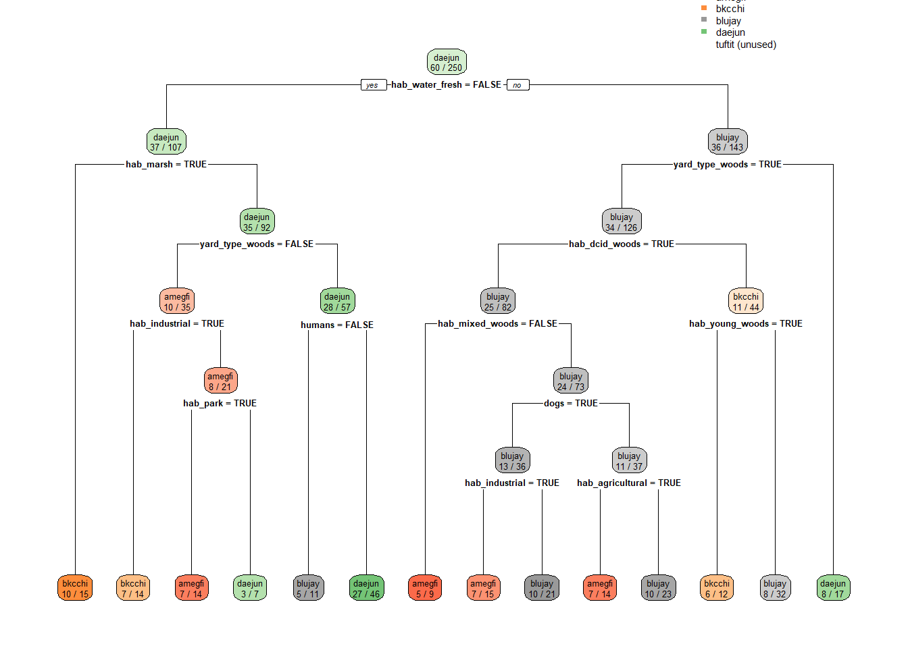
To create a full tree, we set the complexity parameter cp to 0 (split even if it does not improve the tree) and we set the minimum number of observations in a node needed to split to the smallest value of 2 (see: ?rpart.control). Note: full trees overfit the training data!
tree_full <- rpart(species ~.,data=bird_df,
control = rpart.control(minsplit = 2, cp = 0))
rpart.plot(tree_full, extra = 2,
roundint=FALSE,
box.palette = list("Gy", "Gn", "Bu", "Bn","Or", "Rd", "Pu")) # specify 4 colorsWarning: labs do not fit even at cex 0.15, there may be some overplotting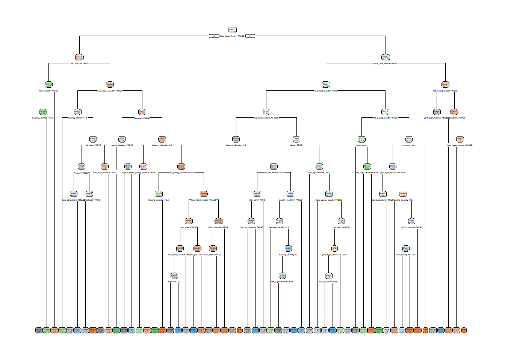
Clear as mud, Right?
tree_fulln= 250
node), split, n, loss, yval, (yprob)
* denotes terminal node
1) root 250 190 daejun (0.23 0.21 0.2 0.24 0.12)
2) hab_water_fresh=FALSE 107 70 daejun (0.21 0.26 0.14 0.35 0.047)
4) hab_marsh=TRUE 15 5 bkcchi (0.2 0.67 0 0.13 0)
8) hab_swamp=FALSE 12 3 bkcchi (0.25 0.75 0 0 0)
16) housing_density>=3.5 1 0 amegfi (1 0 0 0 0) *
17) housing_density< 3.5 11 2 bkcchi (0.18 0.82 0 0 0) *
9) hab_swamp=TRUE 3 1 daejun (0 0.33 0 0.67 0) *
5) hab_marsh=FALSE 92 57 daejun (0.21 0.2 0.16 0.38 0.054)
10) yard_type_woods=FALSE 35 25 amegfi (0.29 0.29 0.14 0.2 0.086)
20) housing_density< 1.5 5 1 bkcchi (0 0.8 0.2 0 0) *
21) housing_density>=1.5 30 20 amegfi (0.33 0.2 0.13 0.23 0.1)
42) hab_park=TRUE 21 12 amegfi (0.43 0.14 0.19 0.14 0.095)
84) cats=FALSE 14 8 amegfi (0.43 0.14 0.29 0.071 0.071)
168) hab_agricultural=FALSE 10 5 amegfi (0.5 0.2 0.1 0.1 0.1) *
169) hab_agricultural=TRUE 4 1 blujay (0.25 0 0.75 0 0) *
85) cats=TRUE 7 4 amegfi (0.43 0.14 0 0.29 0.14)
170) hab_agricultural=TRUE 6 3 amegfi (0.5 0.17 0 0.17 0.17) *
171) hab_agricultural=FALSE 1 0 daejun (0 0 0 1 0) *
43) hab_park=FALSE 9 5 daejun (0.11 0.33 0 0.44 0.11)
86) hab_dcid_woods=TRUE 1 0 amegfi (1 0 0 0 0) *
87) hab_dcid_woods=FALSE 8 4 daejun (0 0.38 0 0.5 0.12) *
11) yard_type_woods=TRUE 57 29 daejun (0.16 0.14 0.18 0.49 0.035)
22) humans=FALSE 11 6 blujay (0.18 0.18 0.45 0.091 0.091)
44) nearby_feeders=TRUE 2 0 bkcchi (0 1 0 0 0) *
45) nearby_feeders=FALSE 9 4 blujay (0.22 0 0.56 0.11 0.11)
90) dogs=TRUE 1 0 amegfi (1 0 0 0 0) *
91) dogs=FALSE 8 3 blujay (0.12 0 0.62 0.12 0.12) *
23) humans=TRUE 46 19 daejun (0.15 0.13 0.11 0.59 0.022)
46) housing_density< 1.5 11 7 daejun (0.18 0.18 0.27 0.36 0)
92) hab_young_woods=FALSE 4 2 bkcchi (0.25 0.5 0.25 0 0) *
93) hab_young_woods=TRUE 7 3 daejun (0.14 0 0.29 0.57 0) *
47) housing_density>=1.5 35 12 daejun (0.14 0.11 0.057 0.66 0.029)
94) hab_young_woods=TRUE 4 2 bkcchi (0 0.5 0 0.5 0)
188) housing_density>=2.5 2 0 bkcchi (0 1 0 0 0) *
189) housing_density< 2.5 2 0 daejun (0 0 0 1 0) *
95) hab_young_woods=FALSE 31 10 daejun (0.16 0.065 0.065 0.68 0.032)
190) hab_mixed_woods=FALSE 10 5 daejun (0.2 0 0.2 0.5 0.1)
380) hab_park=TRUE 4 2 amegfi (0.5 0 0.25 0.25 0)
760) hab_dcid_woods=FALSE 2 1 amegfi (0.5 0 0.5 0 0)
1520) dogs=FALSE 1 0 amegfi (1 0 0 0 0) *
1521) dogs=TRUE 1 0 blujay (0 0 1 0 0) *
761) hab_dcid_woods=TRUE 2 1 amegfi (0.5 0 0 0.5 0) *
381) hab_park=FALSE 6 2 daejun (0 0 0.17 0.67 0.17)
762) dogs=TRUE 1 0 blujay (0 0 1 0 0) *
763) dogs=FALSE 5 1 daejun (0 0 0 0.8 0.2) *
191) hab_mixed_woods=TRUE 21 5 daejun (0.14 0.095 0 0.76 0)
382) hab_industrial=TRUE 8 4 daejun (0.38 0.12 0 0.5 0)
764) hab_park=FALSE 4 1 amegfi (0.75 0 0 0.25 0) *
765) hab_park=TRUE 4 1 daejun (0 0.25 0 0.75 0) *
383) hab_industrial=FALSE 13 1 daejun (0 0.077 0 0.92 0) *
3) hab_water_fresh=TRUE 143 107 blujay (0.24 0.17 0.25 0.16 0.17)
6) yard_type_woods=TRUE 126 92 blujay (0.25 0.18 0.27 0.12 0.18)
12) hab_dcid_woods=TRUE 82 57 blujay (0.29 0.15 0.3 0.085 0.17)
24) hab_mixed_woods=FALSE 9 4 amegfi (0.56 0 0.11 0 0.33)
48) housing_density< 1.5 7 2 amegfi (0.71 0 0.14 0 0.14) *
49) housing_density>=1.5 2 0 tuftit (0 0 0 0 1) *
25) hab_mixed_woods=TRUE 73 49 blujay (0.26 0.16 0.33 0.096 0.15)
50) dogs=TRUE 36 23 blujay (0.28 0.25 0.36 0.028 0.083)
100) hab_industrial=TRUE 15 8 amegfi (0.47 0.2 0.2 0 0.13)
200) hab_park=TRUE 5 2 amegfi (0.6 0 0.4 0 0)
400) hab_agricultural=FALSE 4 1 amegfi (0.75 0 0.25 0 0) *
401) hab_agricultural=TRUE 1 0 blujay (0 0 1 0 0) *
201) hab_park=FALSE 10 6 amegfi (0.4 0.3 0.1 0 0.2) *
101) hab_industrial=FALSE 21 11 blujay (0.14 0.29 0.48 0.048 0.048)
202) nearby_feeders=FALSE 17 10 blujay (0.18 0.35 0.41 0.059 0)
404) housing_density< 1.5 9 4 bkcchi (0.11 0.56 0.22 0.11 0) *
405) housing_density>=1.5 8 3 blujay (0.25 0.12 0.62 0 0)
810) housing_density< 3 6 3 blujay (0.33 0.17 0.5 0 0)
1620) hab_agricultural=FALSE 1 0 amegfi (1 0 0 0 0) *
1621) hab_agricultural=TRUE 5 2 blujay (0.2 0.2 0.6 0 0) *
811) housing_density>=3 2 0 blujay (0 0 1 0 0) *
203) nearby_feeders=TRUE 4 1 blujay (0 0 0.75 0 0.25) *
51) dogs=FALSE 37 26 blujay (0.24 0.081 0.3 0.16 0.22)
102) hab_agricultural=TRUE 14 7 amegfi (0.5 0 0.071 0.21 0.21) *
103) hab_agricultural=FALSE 23 13 blujay (0.087 0.13 0.43 0.13 0.22)
206) hab_young_woods=FALSE 7 3 blujay (0 0.14 0.57 0.29 0) *
207) hab_young_woods=TRUE 16 10 blujay (0.12 0.12 0.38 0.062 0.31)
414) hab_park=FALSE 10 7 tuftit (0.2 0.2 0.2 0.1 0.3)
828) yard_type_landsca=TRUE 8 6 amegfi (0.25 0.12 0.25 0.12 0.25)
1656) hab_marsh=FALSE 7 5 amegfi (0.29 0.14 0.14 0.14 0.29) *
1657) hab_marsh=TRUE 1 0 blujay (0 0 1 0 0) *
829) yard_type_landsca=FALSE 2 1 bkcchi (0 0.5 0 0 0.5) *
415) hab_park=TRUE 6 2 blujay (0 0 0.67 0 0.33) *
13) hab_dcid_woods=FALSE 44 33 bkcchi (0.16 0.25 0.2 0.18 0.2)
26) hab_young_woods=TRUE 12 6 bkcchi (0.25 0.5 0.083 0.083 0.083)
52) cats=TRUE 4 1 amegfi (0.75 0.25 0 0 0) *
53) cats=FALSE 8 3 bkcchi (0 0.62 0.12 0.12 0.12)
106) hab_agricultural=FALSE 7 2 bkcchi (0 0.71 0.14 0 0.14) *
107) hab_agricultural=TRUE 1 0 daejun (0 0 0 1 0) *
27) hab_young_woods=FALSE 32 24 blujay (0.12 0.16 0.25 0.22 0.25)
54) humans=TRUE 30 22 blujay (0.13 0.17 0.27 0.23 0.2)
108) yard_type_landsca=FALSE 7 5 amegfi (0.29 0.29 0.29 0 0.14)
216) hab_agricultural=TRUE 1 0 bkcchi (0 1 0 0 0) *
217) hab_agricultural=FALSE 6 4 amegfi (0.33 0.17 0.33 0 0.17) *
109) yard_type_landsca=TRUE 23 16 daejun (0.087 0.13 0.26 0.3 0.22)
218) housing_density< 1.5 3 1 daejun (0 0.33 0 0.67 0) *
219) housing_density>=1.5 20 14 blujay (0.1 0.1 0.3 0.25 0.25)
438) hab_industrial=FALSE 19 13 blujay (0.11 0.11 0.32 0.21 0.26)
876) hab_swamp=FALSE 18 12 blujay (0.11 0.11 0.33 0.17 0.28) *
877) hab_swamp=TRUE 1 0 daejun (0 0 0 1 0) *
439) hab_industrial=TRUE 1 0 daejun (0 0 0 1 0) *
55) humans=FALSE 2 0 tuftit (0 0 0 0 1) *
7) yard_type_woods=FALSE 17 9 daejun (0.24 0.12 0.12 0.47 0.059)
14) hab_young_woods=TRUE 6 3 amegfi (0.5 0.17 0.17 0.17 0)
28) yard_type_landsca=FALSE 5 2 amegfi (0.6 0.2 0 0.2 0) *
29) yard_type_landsca=TRUE 1 0 blujay (0 0 1 0 0) *
15) hab_young_woods=FALSE 11 4 daejun (0.091 0.091 0.091 0.64 0.091)
30) hab_agricultural=TRUE 6 1 daejun (0.17 0 0 0.83 0) *
31) hab_agricultural=FALSE 5 3 daejun (0 0.2 0.2 0.4 0.2)
62) hab_mixed_woods=FALSE 4 2 daejun (0 0.25 0.25 0.5 0) *
63) hab_mixed_woods=TRUE 1 0 tuftit (0 0 0 0 1) *Training error on tree with pre-pruning
predict(tree_default, bird_df) |> head () amegfi bkcchi blujay daejun tuftit
OBS1016108597 0.08695652 0.1304348 0.4347826 0.1304348 0.2173913
OBS1103063749 0.08695652 0.1304348 0.4347826 0.1304348 0.2173913
OBS1155529086 0.08695652 0.1304348 0.4347826 0.1304348 0.2173913
OBS1043705011 0.08695652 0.1304348 0.4347826 0.1304348 0.2173913
OBS1043705010 0.08695652 0.1304348 0.4347826 0.1304348 0.2173913
OBS1074366638 0.08695652 0.1304348 0.4347826 0.1304348 0.2173913Does not appear to be doing a good good predicting
pred <- predict(tree_default, bird_df, type="class")
head(pred)OBS1016108597 OBS1103063749 OBS1155529086 OBS1043705011 OBS1043705010
blujay blujay blujay blujay blujay
OBS1074366638
blujay
Levels: amegfi bkcchi blujay daejun tuftitconfusion_table <- with(bird_df, table(species, pred))
confusion_table pred
species amegfi bkcchi blujay daejun tuftit
amegfi 26 8 11 12 0
bkcchi 4 23 16 10 0
blujay 8 3 33 7 0
daejun 5 5 12 38 0
tuftit 9 2 15 3 0correct <- confusion_table |> diag() |> sum()
correct[1] 120error <- confusion_table |> sum() - correct
error[1] 130accuracy <- correct / (correct + error)
accuracy[1] 0.48Not a very good result with an accuracy of just over 50%
accuracy <- function(truth, prediction) {
tbl <- table(truth, prediction)
sum(diag(tbl))/sum(tbl)
}
accuracy(bird_df |> pull(species), pred)[1] 0.48Training error of the full tree
accuracy(bird_df |> pull(species),
predict(tree_full, bird_df, type="class"))[1] 0.644Still not great. Probably a good sign that the variables selected cannot be used to predict the bird species observed.
library(caret)
confusionMatrix(data = pred,
reference = bird_df |> pull(species))Confusion Matrix and Statistics
Reference
Prediction amegfi bkcchi blujay daejun tuftit
amegfi 26 4 8 5 9
bkcchi 8 23 3 5 2
blujay 11 16 33 12 15
daejun 12 10 7 38 3
tuftit 0 0 0 0 0
Overall Statistics
Accuracy : 0.48
95% CI : (0.4166, 0.5438)
No Information Rate : 0.24
P-Value [Acc > NIR] : < 2.2e-16
Kappa : 0.333
Mcnemar's Test P-Value : 1.718e-06
Statistics by Class:
Class: amegfi Class: bkcchi Class: blujay Class: daejun
Sensitivity 0.4561 0.4340 0.6471 0.6333
Specificity 0.8653 0.9086 0.7286 0.8316
Pos Pred Value 0.5000 0.5610 0.3793 0.5429
Neg Pred Value 0.8434 0.8565 0.8896 0.8778
Prevalence 0.2280 0.2120 0.2040 0.2400
Detection Rate 0.1040 0.0920 0.1320 0.1520
Detection Prevalence 0.2080 0.1640 0.3480 0.2800
Balanced Accuracy 0.6607 0.6713 0.6879 0.7325
Class: tuftit
Sensitivity 0.000
Specificity 1.000
Pos Pred Value NaN
Neg Pred Value 0.884
Prevalence 0.116
Detection Rate 0.000
Detection Prevalence 0.000
Balanced Accuracy 0.500Make up my own animal: A lion with feathered wings
my_bird <- tibble(species = NA, yard_type_landsca = TRUE, yard_type_woods = FALSE, hab_dcid_woods=FALSE,hab_mixed_woods=TRUE,hab_park=TRUE, hab_water_fresh=FALSE, hab_industrial=TRUE, hab_agricultural=FALSE, hab_young_woods=TRUE, hab_swamp=FALSE, hab_marsh=FALSE, nearby_feeders=TRUE, cats=FALSE, dogs=TRUE, humans=TRUE, housing_density=3)Fix columns to be factors like in the training set.
my_bird <- my_bird |>
mutate(across(where(is.logical), factor, levels = c(TRUE, FALSE)))
my_bird# A tibble: 1 × 17
species yard_type_landsca yard_type_woods hab_dcid_woods hab_mixed_woods
<fct> <fct> <fct> <fct> <fct>
1 <NA> TRUE FALSE FALSE TRUE
# ℹ 12 more variables: hab_park <fct>, hab_water_fresh <fct>,
# hab_industrial <fct>, hab_agricultural <fct>, hab_young_woods <fct>,
# hab_swamp <fct>, hab_marsh <fct>, nearby_feeders <fct>, cats <fct>,
# dogs <fct>, humans <fct>, housing_density <dbl>Make a prediction using the default tree
predict(tree_default , my_bird, type = "class") 1
bkcchi
Levels: amegfi bkcchi blujay daejun tuftitThe package caret makes preparing training sets, building classification (and regression) models and evaluation easier. A great cheat sheet can be found here.
library(caret)Set random number generator seed to make results reproducible
set.seed(2000)Test data is not used in the model building process and set aside purely for testing the model. Here, we partition data the 80% training and 20% testing.
# create training data frame
inTrain <- createDataPartition(y = bird_df$species, p = .8, list = FALSE)
bird_train <- bird_df |> slice(inTrain)Warning: Slicing with a 1-column matrix was deprecated in dplyr 1.1.0.# create testing data set
bird_test <- bird_df |> slice(-inTrain)The package caret combines training and validation for hyperparameter tuning into a single function called train(). It internally splits the data into training and validation sets and thus will provide you with error estimates for different hyperparameter settings. trainControl is used to choose how testing is performed.
For rpart, train tries to tune the cp parameter (tree complexity) using accuracy to chose the best model. I set minsplit to 10 in order to get more interesting results as 2 was to low and no tree structure was produce. Note: Parameters used for tuning (in this case cp) need to be set using a data.frame in the argument tuneGrid! Setting it in control will be ignored.
fit <- bird_train |>
train(species ~ .,
data = _ ,
method = "rpart",
control = rpart.control(minsplit = 10),
trControl = trainControl(method = "cv", number = 10),
tuneLength = 5)
fitCART
202 samples
16 predictor
5 classes: 'amegfi', 'bkcchi', 'blujay', 'daejun', 'tuftit'
No pre-processing
Resampling: Cross-Validated (10 fold)
Summary of sample sizes: 182, 183, 181, 181, 183, 183, ...
Resampling results across tuning parameters:
cp Accuracy Kappa
0.02272727 0.2677820 0.067473460
0.02597403 0.2625188 0.059092557
0.03246753 0.2672556 0.064416944
0.03896104 0.2670175 0.064700347
0.07792208 0.2332080 0.009424258
Accuracy was used to select the optimal model using the largest value.
The final value used for the model was cp = 0.02272727.Note: Train has built 10 trees using the training folds for each value of cp and the reported values for accuracy and Kappa are the averages on the validation folds.
A model using the best tuning parameters and using all the data supplied to train() is available as fit$finalModel.
rpart.plot(fit$finalModel, extra = 2,
box.palette = list("Gy", "Gn", "Bu", "Bn", "Or", "Rd", "Pu"))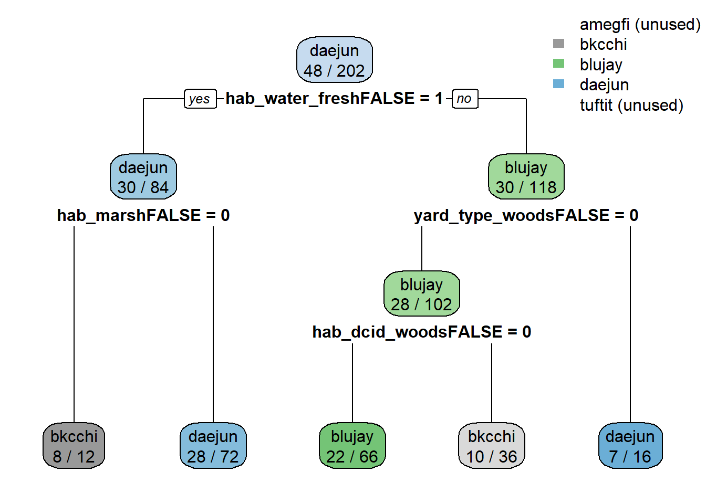
I am surprised by this result as I excepted to have more of tree structure despite the low accuracy and kappa.
caret also computes variable importance. By default it uses competing splits (splits which would be runners up, but do not get chosen by the tree) for rpart models (see ? varImp). Toothed is the runner up for many splits, but it never gets chosen!
varImp(fit)rpart variable importance
Overall
hab_dcid_woodsFALSE 100.00
hab_marshFALSE 97.37
housing_density 89.56
nearby_feedersFALSE 77.89
hab_water_freshFALSE 72.09
yard_type_woodsFALSE 69.04
hab_parkFALSE 32.64
yard_type_landscaFALSE 21.69
hab_mixed_woodsFALSE 20.40
hab_swampFALSE 0.00
humansFALSE 0.00
hab_young_woodsFALSE 0.00
dogsFALSE 0.00
catsFALSE 0.00
hab_agriculturalFALSE 0.00
hab_industrialFALSE 0.00Here is the variable importance without competing splits.
imp <- varImp(fit, compete = FALSE)
imprpart variable importance
Overall
hab_water_freshFALSE 100.00
hab_marshFALSE 74.23
yard_type_woodsFALSE 50.76
hab_dcid_woodsFALSE 38.55
yard_type_landscaFALSE 0.00
housing_density 0.00
catsFALSE 0.00
humansFALSE 0.00
hab_industrialFALSE 0.00
hab_swampFALSE 0.00
hab_agriculturalFALSE 0.00
nearby_feedersFALSE 0.00
hab_mixed_woodsFALSE 0.00
hab_young_woodsFALSE 0.00
dogsFALSE 0.00
hab_parkFALSE 0.00ggplot(imp)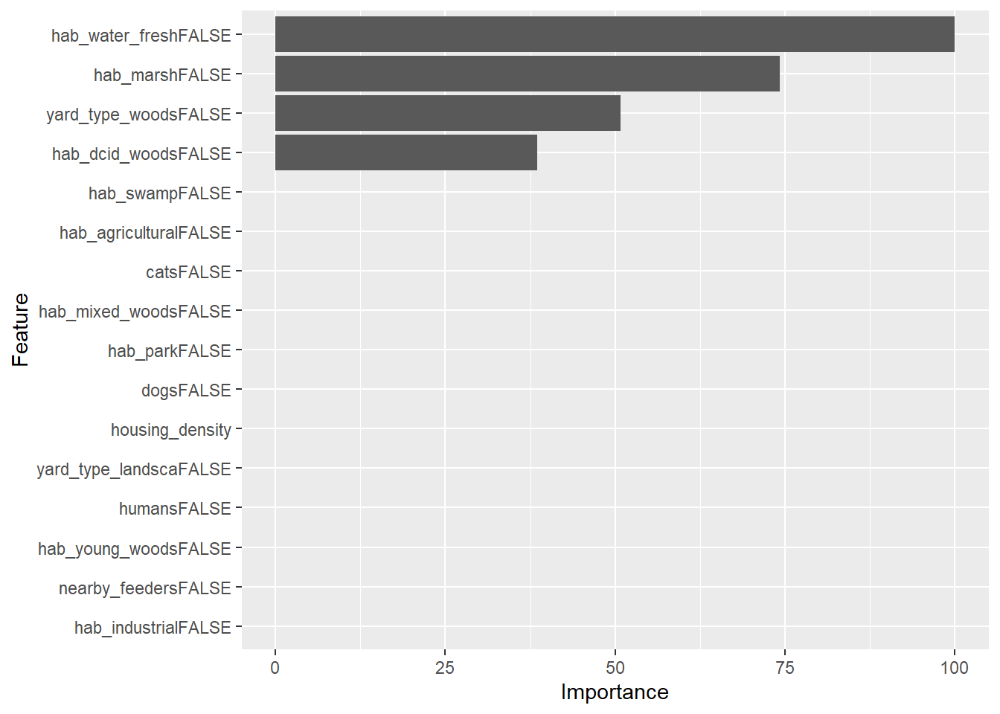
This may help explain the poor accuracy
Use the best model on the test data
pred <- predict(fit, newdata = bird_test)
pred [1] blujay daejun blujay daejun bkcchi daejun daejun blujay blujay daejun
[11] daejun bkcchi bkcchi bkcchi bkcchi daejun daejun daejun daejun blujay
[21] blujay daejun daejun daejun bkcchi blujay blujay blujay blujay blujay
[31] daejun blujay bkcchi bkcchi bkcchi blujay blujay daejun daejun daejun
[41] daejun bkcchi blujay blujay daejun daejun daejun bkcchi
Levels: amegfi bkcchi blujay daejun tuftitCaret’s confusionMatrix() function calculates accuracy, confidence intervals, kappa and many more evaluation metrics. You need to use separate test data to create a confusion matrix based on the generalization error.
confusionMatrix(data = pred,
ref = bird_test |> pull(species))Confusion Matrix and Statistics
Reference
Prediction amegfi bkcchi blujay daejun tuftit
amegfi 0 0 0 0 0
bkcchi 2 3 3 2 1
blujay 6 3 3 2 2
daejun 3 4 4 8 2
tuftit 0 0 0 0 0
Overall Statistics
Accuracy : 0.2917
95% CI : (0.1695, 0.4406)
No Information Rate : 0.25
P-Value [Acc > NIR] : 0.3014
Kappa : 0.0842
Mcnemar's Test P-Value : NA
Statistics by Class:
Class: amegfi Class: bkcchi Class: blujay Class: daejun
Sensitivity 0.0000 0.3000 0.3000 0.6667
Specificity 1.0000 0.7895 0.6579 0.6389
Pos Pred Value NaN 0.2727 0.1875 0.3810
Neg Pred Value 0.7708 0.8108 0.7812 0.8519
Prevalence 0.2292 0.2083 0.2083 0.2500
Detection Rate 0.0000 0.0625 0.0625 0.1667
Detection Prevalence 0.0000 0.2292 0.3333 0.4375
Balanced Accuracy 0.5000 0.5447 0.4789 0.6528
Class: tuftit
Sensitivity 0.0000
Specificity 1.0000
Pos Pred Value NaN
Neg Pred Value 0.8958
Prevalence 0.1042
Detection Rate 0.0000
Detection Prevalence 0.0000
Balanced Accuracy 0.5000This has low accuracy and even lower kappa score. The p-value is also not significant and e cannot reject the null hypothesis.
We will compare decision trees with a k-nearest neighbors (kNN) classifier. We will create fixed sampling scheme (10-folds) so we compare the different models using exactly the same folds. It is specified as trControl during training.
train_index <- createFolds(bird_train$species, k = 10)Build models
rpartFit <- bird_train |>
train(species ~ .,
data = _,
method = "rpart",
tuneLength = 10,
trControl = trainControl(method = "cv", indexOut = train_index)
)Note: for kNN we ask train to scale the data using preProcess = "scale". Logicals will be used as 0-1 variables in Euclidean distance calculation.
knnFit <- bird_train |>
train(species ~ .,
data = _,
method = "knn",
preProcess = "scale",
tuneLength = 10,
trControl = trainControl(method = "cv", indexOut = train_index)
)Compare accuracy over all folds.
resamps <- resamples(list(
CART = rpartFit,
kNearestNeighbors = knnFit
))
summary(resamps)
Call:
summary.resamples(object = resamps)
Models: CART, kNearestNeighbors
Number of resamples: 10
Accuracy
Min. 1st Qu. Median Mean 3rd Qu. Max.
CART 0.3684211 0.4000 0.4522727 0.4701914 0.5375000 0.6190476
kNearestNeighbors 0.3000000 0.3875 0.5238095 0.4887810 0.5488636 0.7000000
NA's
CART 0
kNearestNeighbors 0
Kappa
Min. 1st Qu. Median Mean 3rd Qu. Max.
CART 0.1886121 0.2326007 0.3061461 0.3244008 0.4106569 0.5200000
kNearestNeighbors 0.1111111 0.2055928 0.3913043 0.3452031 0.4244961 0.6226415
NA's
CART 0
kNearestNeighbors 0caret provides some visualizations using the package lattice. For example, a boxplot to compare the accuracy and kappa distribution (over the 10 folds).
library(lattice)
bwplot(resamps, layout = c(3, 1))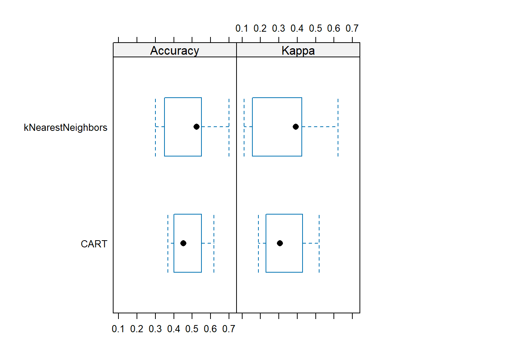
I would say in that both of these models preform rather poorly but if I had to pick one the kNearestNeighbors has small whiskers(less variance) and that is the one I would use.
Find out if one models is statistically better than the other (is the difference in accuracy is not zero).
difs <- diff(resamps)
difs
Call:
diff.resamples(x = resamps)
Models: CART, kNearestNeighbors
Metrics: Accuracy, Kappa
Number of differences: 1
p-value adjustment: bonferroni summary(difs)
Call:
summary.diff.resamples(object = difs)
p-value adjustment: bonferroni
Upper diagonal: estimates of the difference
Lower diagonal: p-value for H0: difference = 0
Accuracy
CART kNearestNeighbors
CART -0.01859
kNearestNeighbors 0.7388
Kappa
CART kNearestNeighbors
CART -0.0208
kNearestNeighbors 0.7754 p-values tells you the probability of seeing an even more extreme value (difference between accuracy) given that the null hypothesis (difference = 0) is true. For a better classifier, the p-value should be less than .05 or 0.01. diff automatically applies Bonferroni correction for multiple comparisons. In this case, kNN seems better but the classifiers do not perform statistically differently. Here we can see that neither model has a p-value less than .05 and a diff much closer to 0.
Decision trees implicitly select features for splitting, but we can also select features manually.
library(FSelector)These scores measure how related each feature is to the class variable. For discrete features (as in our case), the chi-square statistic can be used to derive a score.
weights <- bird_train |>
chi.squared(species ~ ., data = _) |>
as_tibble(rownames = "feature") |>
arrange(desc(attr_importance))
weights# A tibble: 16 × 2
feature attr_importance
<chr> <dbl>
1 hab_water_fresh 0.333
2 hab_dcid_woods 0.249
3 hab_marsh 0.241
4 nearby_feeders 0.173
5 hab_park 0.170
6 hab_young_woods 0.164
7 yard_type_woods 0.158
8 humans 0.151
9 hab_agricultural 0.140
10 cats 0.139
11 hab_mixed_woods 0.133
12 yard_type_landsca 0.111
13 hab_swamp 0.107
14 hab_industrial 0.0932
15 dogs 0.0828
16 housing_density 0 plot importance in descending order (using reorder to order factor levels used by ggplot).
ggplot(weights,
aes(x = attr_importance, y = reorder(feature, attr_importance))) +
geom_bar(stat = "identity") +
xlab("Importance score") +
ylab("Feature")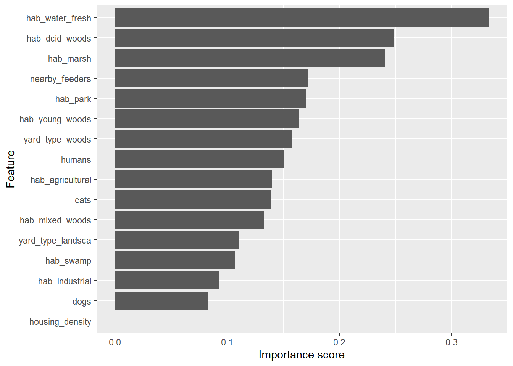
The highest weight is less than 0.4. We will still get the best 5 features.
subset <- cutoff.k(weights |>
column_to_rownames("feature"), 5)
subset[1] "hab_water_fresh" "hab_dcid_woods" "hab_marsh" "nearby_feeders"
[5] "hab_park" Use only the best 5 features to build a model (Fselector provides as.simple.formula)
f <- as.simple.formula(subset, "species")
fspecies ~ hab_water_fresh + hab_dcid_woods + hab_marsh + nearby_feeders +
hab_park
<environment: 0x000002881e53f200>m <- bird_train |> rpart(f, data = _)
rpart.plot(m, extra = 2, roundint = FALSE)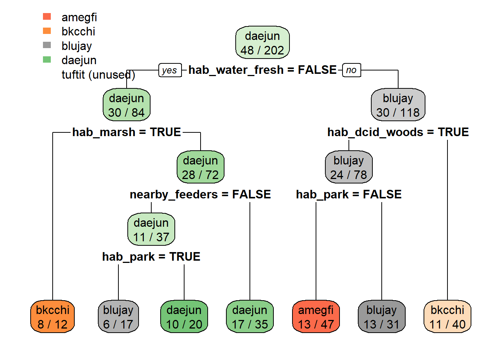
There are many alternative ways to calculate univariate importance scores (see package FSelector). Some of them (also) work for continuous features. One example is the information gain ratio based on entropy as used in decision tree induction.
bird_train |>
gain.ratio(species ~ ., data = _) |>
as_tibble(rownames = "feature") |>
arrange(desc(attr_importance))# A tibble: 16 × 2
feature attr_importance
<chr> <dbl>
1 hab_water_fresh 0.0869
2 hab_marsh 0.0629
3 hab_dcid_woods 0.0454
4 humans 0.0331
5 yard_type_woods 0.0245
6 nearby_feeders 0.0216
7 hab_park 0.0211
8 hab_young_woods 0.0210
9 yard_type_landsca 0.0198
10 hab_mixed_woods 0.0179
11 hab_agricultural 0.0158
12 cats 0.0149
13 hab_swamp 0.0120
14 hab_industrial 0.00710
15 dogs 0.00496
16 housing_density 0 I probably picked the wrong dataset for this HW as I am running out of ways to says that these attributes are not good for predicting the type of bird species.
Often features are related and calculating importance for each feature independently is not optimal. We can use greedy search heuristics. For example cfs uses correlation/entropy with best first search.
bird_train |>
cfs(species ~ ., data = _)[1] "hab_dcid_woods" "hab_water_fresh" "hab_marsh" Black-box feature selection uses an evaluator function (the black box) to calculate a score to be maximized. First, we define an evaluation function that builds a model given a subset of features and calculates a quality score. We use here the average for 5 bootstrap samples (method = "cv" can also be used instead), no tuning (to be faster), and the average accuracy as the score.
evaluator <- function(subset) {
model <- bird_train |>
train(as.simple.formula(subset, "species"),
data = _,
method = "rpart",
trControl = trainControl(method = "boot", number = 5),
tuneLength = 0)
results <- model$resample$Accuracy
cat("Trying features:", paste(subset, collapse = " + "), "\n")
m <- mean(results)
cat("Accuracy:", round(m, 2), "\n\n")
m
}Start with all features (but not the class variable species)
features <- bird_train |> colnames() |> setdiff("species")There are several (greedy) search strategies available. These run for a while!
subset_1 <- backward.search(features, evaluator)Trying features: yard_type_landsca + yard_type_woods + hab_dcid_woods + hab_mixed_woods + hab_park + hab_water_fresh + hab_industrial + hab_agricultural + hab_young_woods + hab_swamp + hab_marsh + nearby_feeders + cats + dogs + humans + housing_density
Accuracy: 0.2
Trying features: yard_type_woods + hab_dcid_woods + hab_mixed_woods + hab_park + hab_water_fresh + hab_industrial + hab_agricultural + hab_young_woods + hab_swamp + hab_marsh + nearby_feeders + cats + dogs + humans + housing_density
Accuracy: 0.21
Trying features: yard_type_landsca + hab_dcid_woods + hab_mixed_woods + hab_park + hab_water_fresh + hab_industrial + hab_agricultural + hab_young_woods + hab_swamp + hab_marsh + nearby_feeders + cats + dogs + humans + housing_density
Accuracy: 0.27
Trying features: yard_type_landsca + yard_type_woods + hab_mixed_woods + hab_park + hab_water_fresh + hab_industrial + hab_agricultural + hab_young_woods + hab_swamp + hab_marsh + nearby_feeders + cats + dogs + humans + housing_density
Accuracy: 0.19
Trying features: yard_type_landsca + yard_type_woods + hab_dcid_woods + hab_park + hab_water_fresh + hab_industrial + hab_agricultural + hab_young_woods + hab_swamp + hab_marsh + nearby_feeders + cats + dogs + humans + housing_density
Accuracy: 0.21
Trying features: yard_type_landsca + yard_type_woods + hab_dcid_woods + hab_mixed_woods + hab_water_fresh + hab_industrial + hab_agricultural + hab_young_woods + hab_swamp + hab_marsh + nearby_feeders + cats + dogs + humans + housing_density
Accuracy: 0.18
Trying features: yard_type_landsca + yard_type_woods + hab_dcid_woods + hab_mixed_woods + hab_park + hab_industrial + hab_agricultural + hab_young_woods + hab_swamp + hab_marsh + nearby_feeders + cats + dogs + humans + housing_density
Accuracy: 0.2
Trying features: yard_type_landsca + yard_type_woods + hab_dcid_woods + hab_mixed_woods + hab_park + hab_water_fresh + hab_agricultural + hab_young_woods + hab_swamp + hab_marsh + nearby_feeders + cats + dogs + humans + housing_density
Accuracy: 0.26
Trying features: yard_type_landsca + yard_type_woods + hab_dcid_woods + hab_mixed_woods + hab_park + hab_water_fresh + hab_industrial + hab_young_woods + hab_swamp + hab_marsh + nearby_feeders + cats + dogs + humans + housing_density
Accuracy: 0.23
Trying features: yard_type_landsca + yard_type_woods + hab_dcid_woods + hab_mixed_woods + hab_park + hab_water_fresh + hab_industrial + hab_agricultural + hab_swamp + hab_marsh + nearby_feeders + cats + dogs + humans + housing_density
Accuracy: 0.21
Trying features: yard_type_landsca + yard_type_woods + hab_dcid_woods + hab_mixed_woods + hab_park + hab_water_fresh + hab_industrial + hab_agricultural + hab_young_woods + hab_marsh + nearby_feeders + cats + dogs + humans + housing_density
Accuracy: 0.23
Trying features: yard_type_landsca + yard_type_woods + hab_dcid_woods + hab_mixed_woods + hab_park + hab_water_fresh + hab_industrial + hab_agricultural + hab_young_woods + hab_swamp + nearby_feeders + cats + dogs + humans + housing_density
Accuracy: 0.2
Trying features: yard_type_landsca + yard_type_woods + hab_dcid_woods + hab_mixed_woods + hab_park + hab_water_fresh + hab_industrial + hab_agricultural + hab_young_woods + hab_swamp + hab_marsh + cats + dogs + humans + housing_density
Accuracy: 0.2
Trying features: yard_type_landsca + yard_type_woods + hab_dcid_woods + hab_mixed_woods + hab_park + hab_water_fresh + hab_industrial + hab_agricultural + hab_young_woods + hab_swamp + hab_marsh + nearby_feeders + dogs + humans + housing_density
Accuracy: 0.18
Trying features: yard_type_landsca + yard_type_woods + hab_dcid_woods + hab_mixed_woods + hab_park + hab_water_fresh + hab_industrial + hab_agricultural + hab_young_woods + hab_swamp + hab_marsh + nearby_feeders + cats + humans + housing_density
Accuracy: 0.2
Trying features: yard_type_landsca + yard_type_woods + hab_dcid_woods + hab_mixed_woods + hab_park + hab_water_fresh + hab_industrial + hab_agricultural + hab_young_woods + hab_swamp + hab_marsh + nearby_feeders + cats + dogs + housing_density
Accuracy: 0.18
Trying features: yard_type_landsca + yard_type_woods + hab_dcid_woods + hab_mixed_woods + hab_park + hab_water_fresh + hab_industrial + hab_agricultural + hab_young_woods + hab_swamp + hab_marsh + nearby_feeders + cats + dogs + humans
Accuracy: 0.21
Trying features: hab_dcid_woods + hab_mixed_woods + hab_park + hab_water_fresh + hab_industrial + hab_agricultural + hab_young_woods + hab_swamp + hab_marsh + nearby_feeders + cats + dogs + humans + housing_density
Accuracy: 0.19
Trying features: yard_type_landsca + hab_mixed_woods + hab_park + hab_water_fresh + hab_industrial + hab_agricultural + hab_young_woods + hab_swamp + hab_marsh + nearby_feeders + cats + dogs + humans + housing_density
Accuracy: 0.21
Trying features: yard_type_landsca + hab_dcid_woods + hab_park + hab_water_fresh + hab_industrial + hab_agricultural + hab_young_woods + hab_swamp + hab_marsh + nearby_feeders + cats + dogs + humans + housing_density
Accuracy: 0.23
Trying features: yard_type_landsca + hab_dcid_woods + hab_mixed_woods + hab_water_fresh + hab_industrial + hab_agricultural + hab_young_woods + hab_swamp + hab_marsh + nearby_feeders + cats + dogs + humans + housing_density
Accuracy: 0.21
Trying features: yard_type_landsca + hab_dcid_woods + hab_mixed_woods + hab_park + hab_industrial + hab_agricultural + hab_young_woods + hab_swamp + hab_marsh + nearby_feeders + cats + dogs + humans + housing_density
Accuracy: 0.2
Trying features: yard_type_landsca + hab_dcid_woods + hab_mixed_woods + hab_park + hab_water_fresh + hab_agricultural + hab_young_woods + hab_swamp + hab_marsh + nearby_feeders + cats + dogs + humans + housing_density
Accuracy: 0.22
Trying features: yard_type_landsca + hab_dcid_woods + hab_mixed_woods + hab_park + hab_water_fresh + hab_industrial + hab_young_woods + hab_swamp + hab_marsh + nearby_feeders + cats + dogs + humans + housing_density
Accuracy: 0.2
Trying features: yard_type_landsca + hab_dcid_woods + hab_mixed_woods + hab_park + hab_water_fresh + hab_industrial + hab_agricultural + hab_swamp + hab_marsh + nearby_feeders + cats + dogs + humans + housing_density
Accuracy: 0.25
Trying features: yard_type_landsca + hab_dcid_woods + hab_mixed_woods + hab_park + hab_water_fresh + hab_industrial + hab_agricultural + hab_young_woods + hab_marsh + nearby_feeders + cats + dogs + humans + housing_density
Accuracy: 0.23
Trying features: yard_type_landsca + hab_dcid_woods + hab_mixed_woods + hab_park + hab_water_fresh + hab_industrial + hab_agricultural + hab_young_woods + hab_swamp + nearby_feeders + cats + dogs + humans + housing_density
Accuracy: 0.22
Trying features: yard_type_landsca + hab_dcid_woods + hab_mixed_woods + hab_park + hab_water_fresh + hab_industrial + hab_agricultural + hab_young_woods + hab_swamp + hab_marsh + cats + dogs + humans + housing_density
Accuracy: 0.16
Trying features: yard_type_landsca + hab_dcid_woods + hab_mixed_woods + hab_park + hab_water_fresh + hab_industrial + hab_agricultural + hab_young_woods + hab_swamp + hab_marsh + nearby_feeders + dogs + humans + housing_density
Accuracy: 0.24
Trying features: yard_type_landsca + hab_dcid_woods + hab_mixed_woods + hab_park + hab_water_fresh + hab_industrial + hab_agricultural + hab_young_woods + hab_swamp + hab_marsh + nearby_feeders + cats + humans + housing_density
Accuracy: 0.22
Trying features: yard_type_landsca + hab_dcid_woods + hab_mixed_woods + hab_park + hab_water_fresh + hab_industrial + hab_agricultural + hab_young_woods + hab_swamp + hab_marsh + nearby_feeders + cats + dogs + housing_density
Accuracy: 0.19
Trying features: yard_type_landsca + hab_dcid_woods + hab_mixed_woods + hab_park + hab_water_fresh + hab_industrial + hab_agricultural + hab_young_woods + hab_swamp + hab_marsh + nearby_feeders + cats + dogs + humans
Accuracy: 0.23 subset_1 [1] "yard_type_landsca" "hab_dcid_woods" "hab_mixed_woods"
[4] "hab_park" "hab_water_fresh" "hab_industrial"
[7] "hab_agricultural" "hab_young_woods" "hab_swamp"
[10] "hab_marsh" "nearby_feeders" "cats"
[13] "dogs" "humans" "housing_density" subset_2 <- forward.search(features, evaluator)Trying features: yard_type_landsca
Accuracy: 0.17
Trying features: yard_type_woods
Accuracy: 0.21
Trying features: hab_dcid_woods
Accuracy: 0.22
Trying features: hab_mixed_woods
Accuracy: 0.22
Trying features: hab_park
Accuracy: 0.16
Trying features: hab_water_fresh
Accuracy: 0.2
Trying features: hab_industrial
Accuracy: 0.18
Trying features: hab_agricultural
Accuracy: 0.19
Trying features: hab_young_woods
Accuracy: 0.22
Trying features: hab_swamp
Accuracy: 0.21
Trying features: hab_marsh
Accuracy: 0.2
Trying features: nearby_feeders
Accuracy: 0.21
Trying features: cats
Accuracy: 0.23
Trying features: dogs
Accuracy: 0.2
Trying features: humans
Accuracy: 0.21
Trying features: housing_density
Accuracy: 0.16
Trying features: yard_type_landsca + cats
Accuracy: 0.17
Trying features: yard_type_woods + cats
Accuracy: 0.18
Trying features: hab_dcid_woods + cats
Accuracy: 0.22
Trying features: hab_mixed_woods + cats
Accuracy: 0.17
Trying features: hab_park + cats
Accuracy: 0.23
Trying features: hab_water_fresh + cats
Accuracy: 0.21
Trying features: hab_industrial + cats
Accuracy: 0.16
Trying features: hab_agricultural + cats
Accuracy: 0.23
Trying features: hab_young_woods + cats
Accuracy: 0.22
Trying features: hab_swamp + cats
Accuracy: 0.21
Trying features: hab_marsh + cats
Accuracy: 0.22
Trying features: nearby_feeders + cats
Accuracy: 0.22
Trying features: cats + dogs
Accuracy: 0.16
Trying features: cats + humans
Accuracy: 0.17
Trying features: cats + housing_density
Accuracy: 0.21 subset_2[1] "cats"subset_3 <- best.first.search(features, evaluator)Trying features: yard_type_landsca
Accuracy: 0.19
Trying features: yard_type_woods
Accuracy: 0.2
Trying features: hab_dcid_woods
Accuracy: 0.22
Trying features: hab_mixed_woods
Accuracy: 0.18
Trying features: hab_park
Accuracy: 0.22
Trying features: hab_water_fresh
Accuracy: 0.22
Trying features: hab_industrial
Accuracy: 0.17
Trying features: hab_agricultural
Accuracy: 0.22
Trying features: hab_young_woods
Accuracy: 0.24
Trying features: hab_swamp
Accuracy: 0.17
Trying features: hab_marsh
Accuracy: 0.19
Trying features: nearby_feeders
Accuracy: 0.23
Trying features: cats
Accuracy: 0.19
Trying features: dogs
Accuracy: 0.19
Trying features: humans
Accuracy: 0.18
Trying features: housing_density
Accuracy: 0.21
Trying features: yard_type_landsca + hab_young_woods
Accuracy: 0.22
Trying features: yard_type_woods + hab_young_woods
Accuracy: 0.23
Trying features: hab_dcid_woods + hab_young_woods
Accuracy: 0.19
Trying features: hab_mixed_woods + hab_young_woods
Accuracy: 0.22
Trying features: hab_park + hab_young_woods
Accuracy: 0.19
Trying features: hab_water_fresh + hab_young_woods
Accuracy: 0.21
Trying features: hab_industrial + hab_young_woods
Accuracy: 0.21
Trying features: hab_agricultural + hab_young_woods
Accuracy: 0.22
Trying features: hab_young_woods + hab_swamp
Accuracy: 0.21
Trying features: hab_young_woods + hab_marsh
Accuracy: 0.25
Trying features: hab_young_woods + nearby_feeders
Accuracy: 0.21
Trying features: hab_young_woods + cats
Accuracy: 0.22
Trying features: hab_young_woods + dogs
Accuracy: 0.21
Trying features: hab_young_woods + humans
Accuracy: 0.21
Trying features: hab_young_woods + housing_density
Accuracy: 0.21
Trying features: yard_type_landsca + hab_young_woods + hab_marsh
Accuracy: 0.18
Trying features: yard_type_woods + hab_young_woods + hab_marsh
Accuracy: 0.18
Trying features: hab_dcid_woods + hab_young_woods + hab_marsh
Accuracy: 0.23
Trying features: hab_mixed_woods + hab_young_woods + hab_marsh
Accuracy: 0.26
Trying features: hab_park + hab_young_woods + hab_marsh
Accuracy: 0.23
Trying features: hab_water_fresh + hab_young_woods + hab_marsh
Accuracy: 0.2
Trying features: hab_industrial + hab_young_woods + hab_marsh
Accuracy: 0.24
Trying features: hab_agricultural + hab_young_woods + hab_marsh
Accuracy: 0.17
Trying features: hab_young_woods + hab_swamp + hab_marsh
Accuracy: 0.19
Trying features: hab_young_woods + hab_marsh + nearby_feeders
Accuracy: 0.22
Trying features: hab_young_woods + hab_marsh + cats
Accuracy: 0.23
Trying features: hab_young_woods + hab_marsh + dogs
Accuracy: 0.18
Trying features: hab_young_woods + hab_marsh + humans
Accuracy: 0.21
Trying features: hab_young_woods + hab_marsh + housing_density
Accuracy: 0.21
Trying features: yard_type_landsca + hab_mixed_woods + hab_young_woods + hab_marsh
Accuracy: 0.21
Trying features: yard_type_woods + hab_mixed_woods + hab_young_woods + hab_marsh
Accuracy: 0.2
Trying features: hab_dcid_woods + hab_mixed_woods + hab_young_woods + hab_marsh
Accuracy: 0.26
Trying features: hab_mixed_woods + hab_park + hab_young_woods + hab_marsh
Accuracy: 0.19
Trying features: hab_mixed_woods + hab_water_fresh + hab_young_woods + hab_marsh
Accuracy: 0.2
Trying features: hab_mixed_woods + hab_industrial + hab_young_woods + hab_marsh
Accuracy: 0.19
Trying features: hab_mixed_woods + hab_agricultural + hab_young_woods + hab_marsh
Accuracy: 0.18
Trying features: hab_mixed_woods + hab_young_woods + hab_swamp + hab_marsh
Accuracy: 0.22
Trying features: hab_mixed_woods + hab_young_woods + hab_marsh + nearby_feeders
Accuracy: 0.21
Trying features: hab_mixed_woods + hab_young_woods + hab_marsh + cats
Accuracy: 0.26
Trying features: hab_mixed_woods + hab_young_woods + hab_marsh + dogs
Accuracy: 0.23
Trying features: hab_mixed_woods + hab_young_woods + hab_marsh + humans
Accuracy: 0.21
Trying features: hab_mixed_woods + hab_young_woods + hab_marsh + housing_density
Accuracy: 0.22 subset_3[1] "hab_mixed_woods" "hab_young_woods" "hab_marsh" subset_4 <- hill.climbing.search(features, evaluator)Trying features: yard_type_landsca + hab_park + hab_water_fresh + hab_industrial + hab_young_woods + hab_marsh
Accuracy: 0.24
Trying features: yard_type_landsca + yard_type_woods + hab_park + hab_water_fresh + hab_industrial + hab_young_woods + hab_marsh
Accuracy: 0.22
Trying features: yard_type_landsca + hab_dcid_woods + hab_park + hab_water_fresh + hab_industrial + hab_young_woods + hab_marsh
Accuracy: 0.18
Trying features: yard_type_landsca + hab_mixed_woods + hab_park + hab_water_fresh + hab_industrial + hab_young_woods + hab_marsh
Accuracy: 0.22
Trying features: yard_type_landsca + hab_park + hab_water_fresh + hab_industrial + hab_agricultural + hab_young_woods + hab_marsh
Accuracy: 0.25
Trying features: yard_type_landsca + hab_park + hab_water_fresh + hab_industrial + hab_young_woods + hab_swamp + hab_marsh
Accuracy: 0.23
Trying features: yard_type_landsca + hab_park + hab_water_fresh + hab_industrial + hab_young_woods + hab_marsh + nearby_feeders
Accuracy: 0.2
Trying features: yard_type_landsca + hab_park + hab_water_fresh + hab_industrial + hab_young_woods + hab_marsh + cats
Accuracy: 0.25
Trying features: yard_type_landsca + hab_park + hab_water_fresh + hab_industrial + hab_young_woods + hab_marsh + dogs
Accuracy: 0.2
Trying features: yard_type_landsca + hab_park + hab_water_fresh + hab_industrial + hab_young_woods + hab_marsh + humans
Accuracy: 0.23
Trying features: yard_type_landsca + hab_park + hab_water_fresh + hab_industrial + hab_young_woods + hab_marsh + housing_density
Accuracy: 0.21
Trying features: hab_park + hab_water_fresh + hab_industrial + hab_young_woods + hab_marsh
Accuracy: 0.2
Trying features: yard_type_landsca + hab_water_fresh + hab_industrial + hab_young_woods + hab_marsh
Accuracy: 0.21
Trying features: yard_type_landsca + hab_park + hab_industrial + hab_young_woods + hab_marsh
Accuracy: 0.2
Trying features: yard_type_landsca + hab_park + hab_water_fresh + hab_young_woods + hab_marsh
Accuracy: 0.24
Trying features: yard_type_landsca + hab_park + hab_water_fresh + hab_industrial + hab_marsh
Accuracy: 0.21
Trying features: yard_type_landsca + hab_park + hab_water_fresh + hab_industrial + hab_young_woods
Accuracy: 0.21
Trying features: yard_type_landsca + yard_type_woods + hab_park + hab_water_fresh + hab_industrial + hab_young_woods + hab_marsh + cats
Accuracy: 0.24
Trying features: yard_type_landsca + hab_dcid_woods + hab_park + hab_water_fresh + hab_industrial + hab_young_woods + hab_marsh + cats
Accuracy: 0.21
Trying features: yard_type_landsca + hab_mixed_woods + hab_park + hab_water_fresh + hab_industrial + hab_young_woods + hab_marsh + cats
Accuracy: 0.23
Trying features: yard_type_landsca + hab_park + hab_water_fresh + hab_industrial + hab_agricultural + hab_young_woods + hab_marsh + cats
Accuracy: 0.19
Trying features: yard_type_landsca + hab_park + hab_water_fresh + hab_industrial + hab_young_woods + hab_swamp + hab_marsh + cats
Accuracy: 0.23
Trying features: yard_type_landsca + hab_park + hab_water_fresh + hab_industrial + hab_young_woods + hab_marsh + nearby_feeders + cats
Accuracy: 0.2
Trying features: yard_type_landsca + hab_park + hab_water_fresh + hab_industrial + hab_young_woods + hab_marsh + cats + dogs
Accuracy: 0.19
Trying features: yard_type_landsca + hab_park + hab_water_fresh + hab_industrial + hab_young_woods + hab_marsh + cats + humans
Accuracy: 0.23
Trying features: yard_type_landsca + hab_park + hab_water_fresh + hab_industrial + hab_young_woods + hab_marsh + cats + housing_density
Accuracy: 0.22
Trying features: hab_park + hab_water_fresh + hab_industrial + hab_young_woods + hab_marsh + cats
Accuracy: 0.19
Trying features: yard_type_landsca + hab_water_fresh + hab_industrial + hab_young_woods + hab_marsh + cats
Accuracy: 0.22
Trying features: yard_type_landsca + hab_park + hab_industrial + hab_young_woods + hab_marsh + cats
Accuracy: 0.23
Trying features: yard_type_landsca + hab_park + hab_water_fresh + hab_young_woods + hab_marsh + cats
Accuracy: 0.2
Trying features: yard_type_landsca + hab_park + hab_water_fresh + hab_industrial + hab_marsh + cats
Accuracy: 0.19
Trying features: yard_type_landsca + hab_park + hab_water_fresh + hab_industrial + hab_young_woods + cats
Accuracy: 0.19 subset_4[1] "yard_type_landsca" "hab_park" "hab_water_fresh"
[4] "hab_industrial" "hab_young_woods" "hab_marsh"
[7] "cats" It appears that hill climbing (subset_4) gave the best accuracy with four features at 29%.
Nominal features (factors) are often encoded as a series of 0-1 dummy variables. For example, let us try to predict if an bird lives in hab_park given the species. First we use the original encoding of type as a factor with several values.
tree_hab_park <- bird_train |>
rpart(hab_park ~ species, data = _)
rpart.plot(tree_hab_park, extra = 2, roundint = FALSE)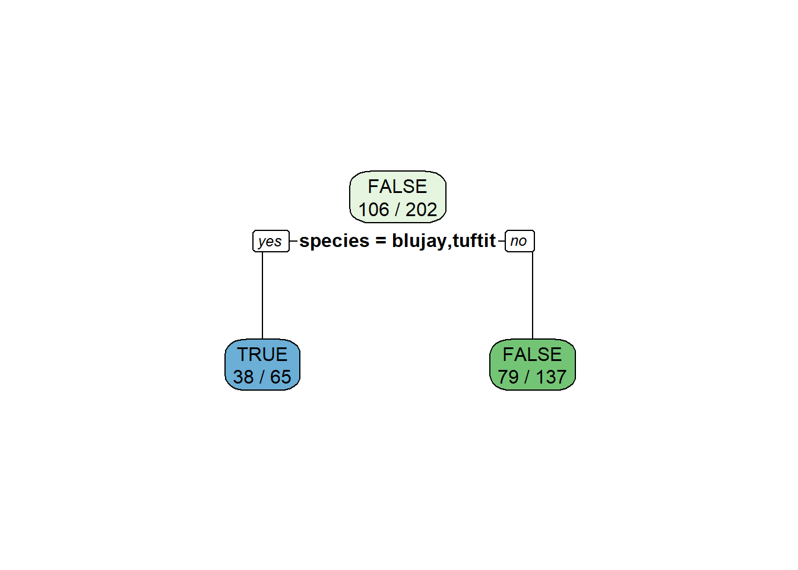
Note: Some splits use multiple values. Building the tree will become extremely slow if a factor has many levels (different values) since the tree has to check all possible splits into two subsets. This situation should be avoided.
Convert type into a set of 0-1 dummy variables using class2ind. See also ? dummyVars in package caret.
bird_train_dummy <- as_tibble(class2ind(bird_train$species)) |>
mutate(across(everything(), as.factor)) |>
add_column(hab_park = bird_train$hab_park)
bird_train_dummy# A tibble: 202 × 6
amegfi bkcchi blujay daejun tuftit hab_park
<fct> <fct> <fct> <fct> <fct> <fct>
1 0 0 0 1 0 FALSE
2 0 0 0 1 0 FALSE
3 0 1 0 0 0 FALSE
4 0 0 1 0 0 FALSE
5 0 0 1 0 0 FALSE
6 0 0 0 1 0 FALSE
7 0 1 0 0 0 FALSE
8 0 0 0 1 0 FALSE
9 0 0 1 0 0 TRUE
10 0 0 0 0 1 TRUE
# ℹ 192 more rowstree_hab_park <- bird_train_dummy |>
rpart(hab_park~.,
data=_,
control= rpart.control(minsplit = 2, cp =0.01))
rpart.plot(tree_hab_park, roundint = FALSE)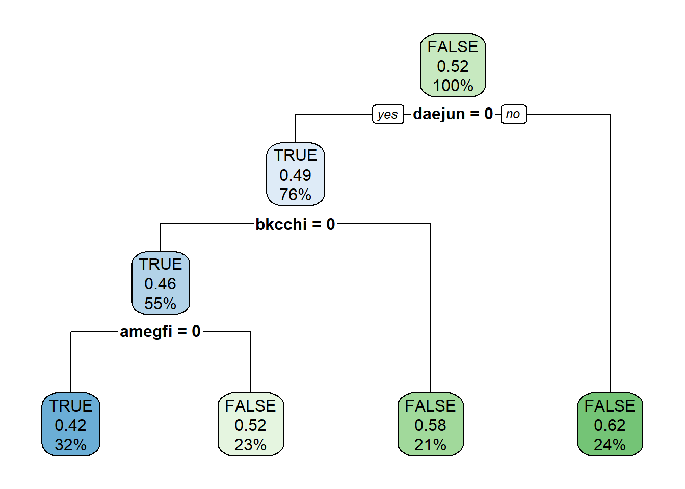
fit <- bird_train |>
train(hab_park ~ species,
data = _,
method = "rpart",
control = rpart.control(minsplit = 2),
tuneGrid = data.frame(cp = 0.01))
fitCART
202 samples
1 predictor
2 classes: 'TRUE', 'FALSE'
No pre-processing
Resampling: Bootstrapped (25 reps)
Summary of sample sizes: 202, 202, 202, 202, 202, 202, ...
Resampling results:
Accuracy Kappa
0.5119417 0.03832419
Tuning parameter 'cp' was held constant at a value of 0.01rpart.plot(fit$finalModel, extra = 2)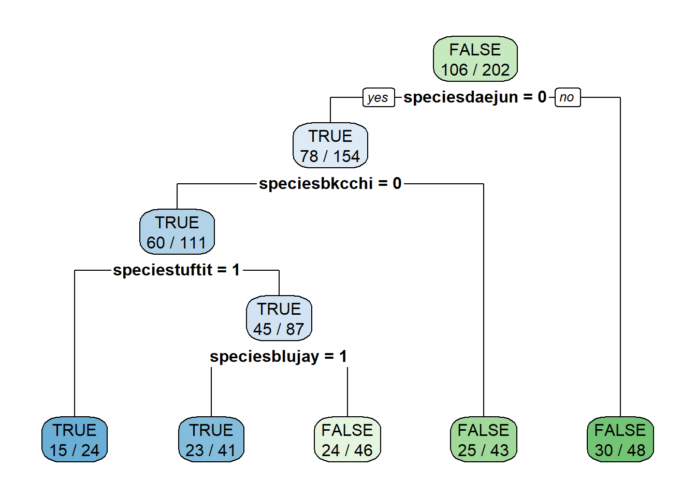
So species is not a good predictor of hab_park, as it seems to be a flip of the coin.
Classifiers have a hard time to learn from data where we have much more observations for one class (called the majority class). This is called the class imbalance problem.
Here is a very good article about the problem and solutions.
Class distribution
ggplot(bird_df, aes(y=species))+geom_bar()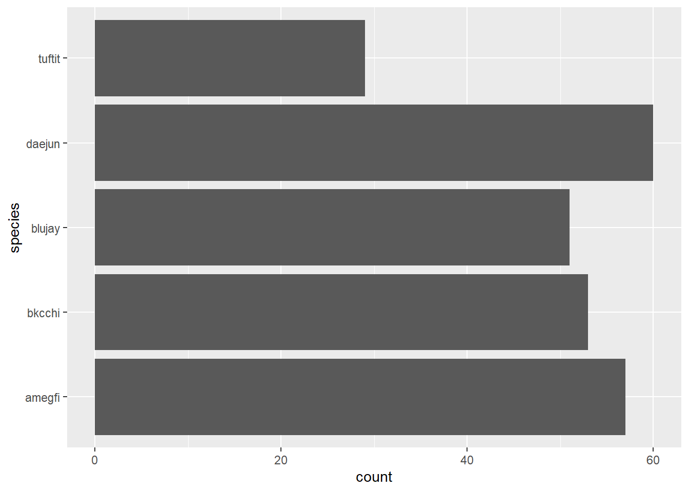
To create an imbalanced problem, we want to decide if a bird is an tuftit. First, we change the class variable to make it into a binary tuftit/no tuftit classification problem. Note: We use here the training data for testing. You should use a separate testing data set!
# create a new dataset
bird_tuftit <- bird_df |>
mutate(species = factor(bird_df$species == "tuftit",
levels = c(FALSE, TRUE),
labels = c("nontuftit", "tuftit")))summary(bird_tuftit) species yard_type_landsca yard_type_woods hab_dcid_woods
nontuftit:221 TRUE :222 TRUE :192 TRUE :123
tuftit : 29 FALSE: 28 FALSE: 58 FALSE:127
hab_mixed_woods hab_park hab_water_fresh hab_industrial hab_agricultural
TRUE :193 TRUE :115 TRUE :143 TRUE : 71 TRUE : 83
FALSE: 57 FALSE:135 FALSE:107 FALSE:179 FALSE:167
hab_young_woods hab_swamp hab_marsh nearby_feeders cats dogs
TRUE : 91 TRUE : 44 TRUE : 52 TRUE :123 TRUE : 92 TRUE :132
FALSE:159 FALSE:206 FALSE:198 FALSE:127 FALSE:158 FALSE:118
humans housing_density
TRUE :222 Min. :1.000
FALSE: 28 1st Qu.:1.000
Median :2.000
Mean :2.176
3rd Qu.:3.000
Max. :4.000 See if we have a class imbalance problem
ggplot(bird_tuftit, aes(y=species))+geom_bar()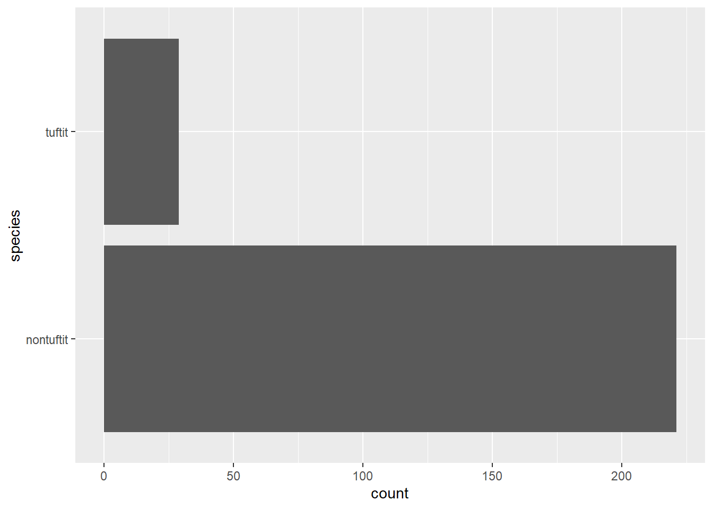
Create test and training data. I use here a 50/50 split to make sure that the test set has some samples of the rare tuftit class.
set.seed(1234)
inTrain <- createDataPartition(y = bird_tuftit$species, p = .5, list = FALSE)
training_tuftit <- bird_tuftit |> slice(inTrain)
testing_tuftit <- bird_tuftit |> slice(-inTrain)fit <- training_tuftit |>
train(species ~ .,
data = _,
method = "rpart",
trControl = trainControl(method = "cv"))fitCART
126 samples
16 predictor
2 classes: 'nontuftit', 'tuftit'
No pre-processing
Resampling: Cross-Validated (10 fold)
Summary of sample sizes: 113, 114, 113, 113, 114, 113, ...
Resampling results:
Accuracy Kappa
0.874359 -0.008333333
Tuning parameter 'cp' was held constant at a value of 0rpart.plot(fit$finalModel, extra = 2)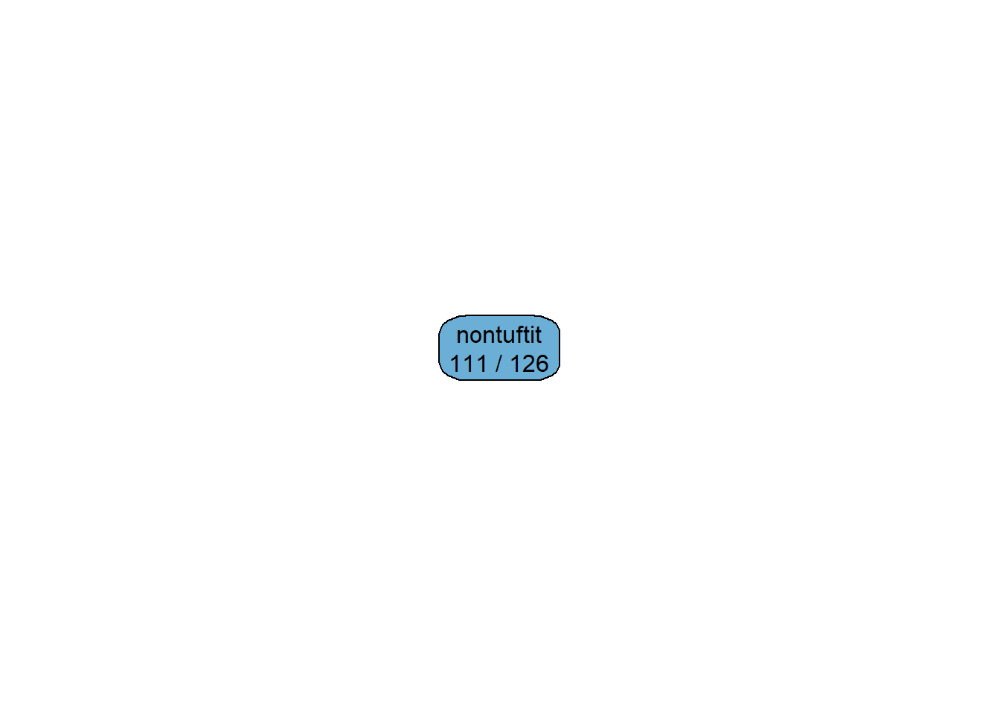
confusionMatrix(data = predict(fit, testing_tuftit),
ref = testing_tuftit$species, positive = "tuftit")Confusion Matrix and Statistics
Reference
Prediction nontuftit tuftit
nontuftit 110 14
tuftit 0 0
Accuracy : 0.8871
95% CI : (0.8178, 0.9369)
No Information Rate : 0.8871
P-Value [Acc > NIR] : 0.570564
Kappa : 0
Mcnemar's Test P-Value : 0.000512
Sensitivity : 0.0000
Specificity : 1.0000
Pos Pred Value : NaN
Neg Pred Value : 0.8871
Prevalence : 0.1129
Detection Rate : 0.0000
Detection Prevalence : 0.0000
Balanced Accuracy : 0.5000
'Positive' Class : tuftit
Accuracy is high, but it is exactly the same as the no-information rate and kappa is zero. Sensitivity is also zero, meaning that we do not identify any positive (tuftit). If the cost of missing a positive is much larger than the cost associated with misclassifying a negative, then accuracy is not a good measure! By dealing with imbalance, we are not concerned with accuracy, but we want to increase the sensitivity, i.e., the chance to identify positive examples.
Note: The positive class value (the one that you want to detect) is set manually to tuftit using positive = "tuftit". Otherwise sensitivity/specificity will not be correctly calculated.
We use stratified sampling with replacement (to oversample the minority/positive class). You could also use SMOTE (in package DMwR) or other sampling strategies (e.g., from package unbalanced). We use 50+50 observations here (Note: many samples will be chosen several times).
library(sampling)
set.seed(1000) # for repeatability
id <- strata(training_tuftit, stratanames = "species", size = c(50, 50), method = "srswr")
training_tuftit_balanced <- training_tuftit |>
slice(id$ID_unit)
table(training_tuftit_balanced$species)
nontuftit tuftit
50 50 fit <- training_tuftit_balanced |>
train(species ~ .,
data = _,
method = "rpart",
trControl = trainControl(method = "cv"),
control = rpart.control(minsplit = 5))
fitCART
100 samples
16 predictor
2 classes: 'nontuftit', 'tuftit'
No pre-processing
Resampling: Cross-Validated (10 fold)
Summary of sample sizes: 90, 90, 90, 90, 90, 90, ...
Resampling results across tuning parameters:
cp Accuracy Kappa
0.02 0.83 0.66
0.14 0.66 0.32
0.30 0.54 0.08
Accuracy was used to select the optimal model using the largest value.
The final value used for the model was cp = 0.02.rpart.plot(fit$finalModel, extra = 2)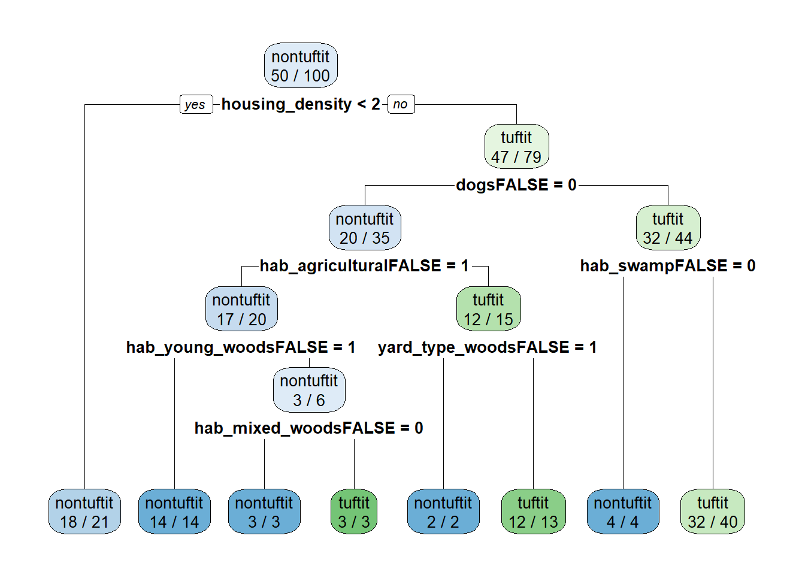
Check on the unbalanced testing data.
confusionMatrix(data = predict(fit, testing_tuftit),
ref = testing_tuftit$species, positive = "tuftit")Confusion Matrix and Statistics
Reference
Prediction nontuftit tuftit
nontuftit 78 9
tuftit 32 5
Accuracy : 0.6694
95% CI : (0.5792, 0.7512)
No Information Rate : 0.8871
P-Value [Acc > NIR] : 1.0000000
Kappa : 0.0386
Mcnemar's Test P-Value : 0.0005908
Sensitivity : 0.35714
Specificity : 0.70909
Pos Pred Value : 0.13514
Neg Pred Value : 0.89655
Prevalence : 0.11290
Detection Rate : 0.04032
Detection Prevalence : 0.29839
Balanced Accuracy : 0.53312
'Positive' Class : tuftit
Note that the accuracy is below the no information rate! However, kappa (improvement of accuracy over randomness) and sensitivity (the ability to identify tuftit) have increased.
There is a tradeoff between sensitivity and specificity (how many of the identified birds are really tuftits) The tradeoff can be controlled using the sample proportions. We can sample more tuftits to increase sensitivity at the cost of lower specificity (this effect cannot be seen in the data since the test set has only a few tuftits).
id <- strata(training_tuftit, stratanames = "species", size = c(50, 100), method = "srswr")
training_tuftit_balanced <- training_tuftit |>
slice(id$ID_unit)
table(training_tuftit_balanced$species)
nontuftit tuftit
50 100 fit <- training_tuftit_balanced |>
train(species ~ .,
data = _,
method = "rpart",
trControl = trainControl(method = "cv"),
control = rpart.control(minsplit = 5))
confusionMatrix(data = predict(fit, testing_tuftit),
ref = testing_tuftit$species, positive = "tuftit")Confusion Matrix and Statistics
Reference
Prediction nontuftit tuftit
nontuftit 58 9
tuftit 52 5
Accuracy : 0.5081
95% CI : (0.4168, 0.5989)
No Information Rate : 0.8871
P-Value [Acc > NIR] : 1
Kappa : -0.0494
Mcnemar's Test P-Value : 7.551e-08
Sensitivity : 0.35714
Specificity : 0.52727
Pos Pred Value : 0.08772
Neg Pred Value : 0.86567
Prevalence : 0.11290
Detection Rate : 0.04032
Detection Prevalence : 0.45968
Balanced Accuracy : 0.44221
'Positive' Class : tuftit
Increase complexity and require less data for splitting a node. Here I also use AUC (area under the ROC) as the tuning metric. You need to specify the two class summary function. Note that the tree still trying to improve accuracy on the data and not AUC! I also enable class probabilities since I want to predict probabilities later.
fit <- training_tuftit |>
train(species ~ .,
data = _,
method = "rpart",
tuneLength = 10,
trControl = trainControl(method = "cv",
classProbs = TRUE, ## necessary for predict with type="prob"
summaryFunction=twoClassSummary), ## necessary for ROC
metric = "ROC",
control = rpart.control(minsplit = 3))fitCART
126 samples
16 predictor
2 classes: 'nontuftit', 'tuftit'
No pre-processing
Resampling: Cross-Validated (10 fold)
Summary of sample sizes: 114, 113, 113, 113, 113, 114, ...
Resampling results:
ROC Sens Spec
0.682197 0.955303 0.2
Tuning parameter 'cp' was held constant at a value of 0rpart.plot(fit$finalModel, extra = 2)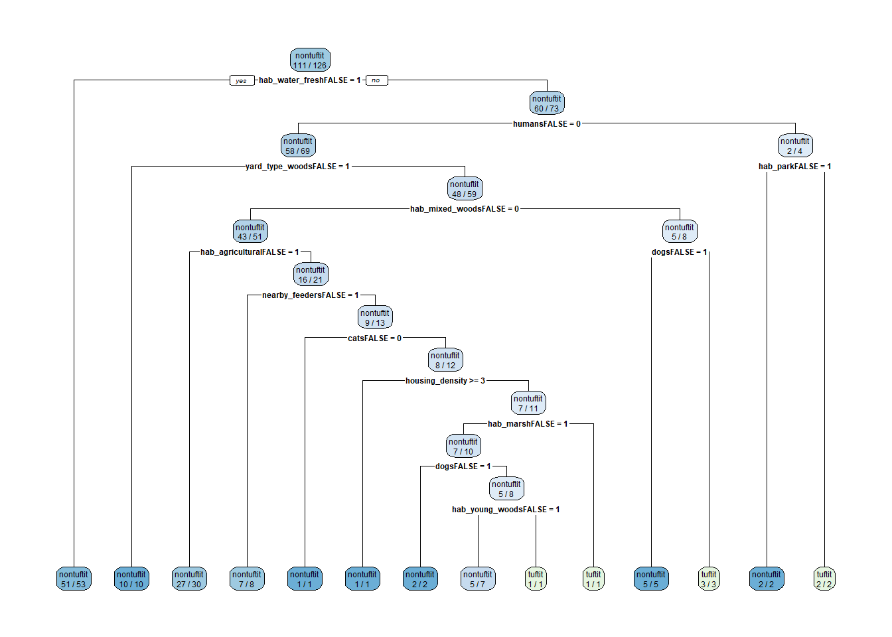
confusionMatrix(data = predict(fit, testing_tuftit),
ref = testing_tuftit$species, positive = "tuftit")Confusion Matrix and Statistics
Reference
Prediction nontuftit tuftit
nontuftit 99 11
tuftit 11 3
Accuracy : 0.8226
95% CI : (0.7438, 0.8853)
No Information Rate : 0.8871
P-Value [Acc > NIR] : 0.9885
Kappa : 0.1143
Mcnemar's Test P-Value : 1.0000
Sensitivity : 0.21429
Specificity : 0.90000
Pos Pred Value : 0.21429
Neg Pred Value : 0.90000
Prevalence : 0.11290
Detection Rate : 0.02419
Detection Prevalence : 0.11290
Balanced Accuracy : 0.55714
'Positive' Class : tuftit
Note: Accuracy is high, but it is close or below to the no-information rate!
We can create a classifier which will detect more tuftits at the expense of misclassifying non-tuftit. This is equivalent to increasing the cost of misclassifying a tuftit as a non-tuftit. The usual rule is to predict in each node the majority class from the test data in the node. For a binary classification problem that means a probability of >50%. In the following, we reduce this threshold to 1% or more. This means that if the new observation ends up in a leaf node with 1% or more tuftits from training then the observation will be classified as a tuftit. The data set is small and this works better with more data.
prob <- predict(fit, testing_tuftit, type = "prob")
tail(prob) nontuftit tuftit
OBS1063879729 0.0000000 1.00000000
OBS1057240025 0.9000000 0.10000000
OBS1093405579 0.9000000 0.10000000
OBS1029432885 0.9622642 0.03773585
OBS1045430740 0.9622642 0.03773585
OBS1032311687 0.9622642 0.03773585pred <- as.factor(ifelse(prob[,"tuftit"]>=0.01, "tuftit", "nontuftit"))
confusionMatrix(data = pred,
ref = testing_tuftit$species, positive = "tuftit")Confusion Matrix and Statistics
Reference
Prediction nontuftit tuftit
nontuftit 13 2
tuftit 97 12
Accuracy : 0.2016
95% CI : (0.1349, 0.2831)
No Information Rate : 0.8871
P-Value [Acc > NIR] : 1
Kappa : -0.0062
Mcnemar's Test P-Value : <2e-16
Sensitivity : 0.85714
Specificity : 0.11818
Pos Pred Value : 0.11009
Neg Pred Value : 0.86667
Prevalence : 0.11290
Detection Rate : 0.09677
Detection Prevalence : 0.87903
Balanced Accuracy : 0.48766
'Positive' Class : tuftit
Note that accuracy goes down and is below the no information rate. However, both measures are based on the idea that all errors have the same cost. What is important is that we are now able to find more tuftits.
Since we have a binary classification problem and a classifier that predicts a probability for an observation to be a tuftit, we can also use a receiver operating characteristic (ROC) curve. For the ROC curve all different cutoff thresholds for the probability are used and then connected with a line. The area under the curve represents a single number for how well the classifier works (the closer to one, the better).
library("pROC")
r <- roc(testing_tuftit$species == "tuftit", prob[,"tuftit"])Setting levels: control = FALSE, case = TRUESetting direction: controls < casesr
Call:
roc.default(response = testing_tuftit$species == "tuftit", predictor = prob[, "tuftit"])
Data: prob[, "tuftit"] in 110 controls (testing_tuftit$species == "tuftit" FALSE) < 14 cases (testing_tuftit$species == "tuftit" TRUE).
Area under the curve: 0.6019ggroc(r) + geom_abline(intercept = 1, slope = 1, color = "darkgrey")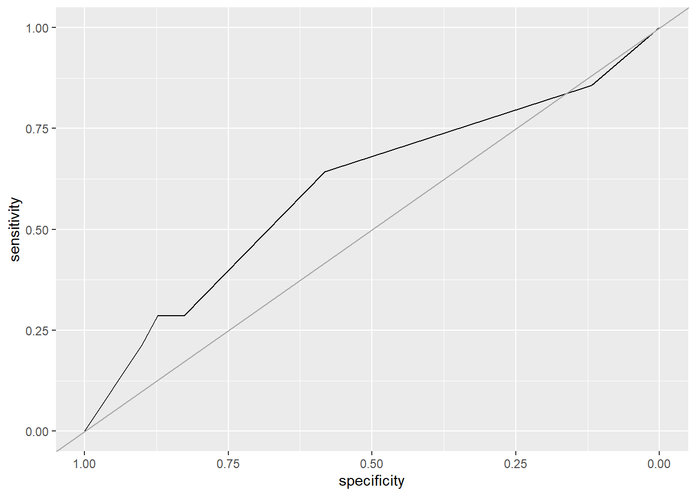
The implementation of CART in rpart can use a cost matrix for making splitting decisions (as parameter loss). The matrix has the form
TP FP FN TN
TP and TN have to be 0. We make FN very expensive (100).
cost <- matrix(c(
0, 1,
100, 0
), byrow = TRUE, nrow = 2)
cost [,1] [,2]
[1,] 0 1
[2,] 100 0fit <- training_tuftit |>
train(species ~ .,
data = _,
method = "rpart",
parms = list(loss = cost),
trControl = trainControl(method = "cv"))fitCART
126 samples
16 predictor
2 classes: 'nontuftit', 'tuftit'
No pre-processing
Resampling: Cross-Validated (10 fold)
Summary of sample sizes: 113, 113, 114, 114, 113, 114, ...
Resampling results:
Accuracy Kappa
0.474359 0.04538828
Tuning parameter 'cp' was held constant at a value of 0rpart.plot(fit$finalModel, extra = 2)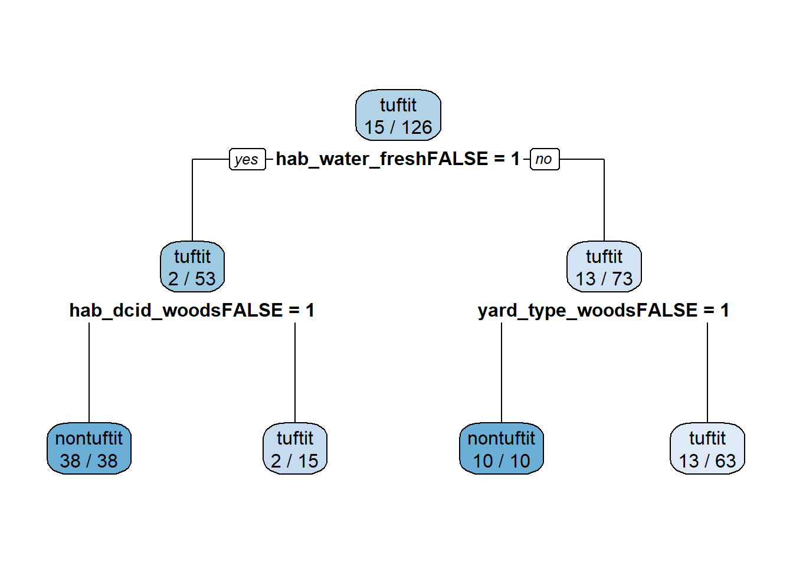
confusionMatrix(data = predict(fit, testing_tuftit),
ref = testing_tuftit$species, positive = "tuftit")Confusion Matrix and Statistics
Reference
Prediction nontuftit tuftit
nontuftit 45 3
tuftit 65 11
Accuracy : 0.4516
95% CI : (0.3621, 0.5435)
No Information Rate : 0.8871
P-Value [Acc > NIR] : 1
Kappa : 0.0664
Mcnemar's Test P-Value : 1.389e-13
Sensitivity : 0.78571
Specificity : 0.40909
Pos Pred Value : 0.14474
Neg Pred Value : 0.93750
Prevalence : 0.11290
Detection Rate : 0.08871
Detection Prevalence : 0.61290
Balanced Accuracy : 0.59740
'Positive' Class : tuftit
The high cost for false negatives results in a classifier that does not miss any tuftit.
Using the basic concepts and techniques on the bird data shows that the 16 true/false variables about environmental factors in connection with observations of bird species do not serve as good classifiers for identification purposes. Most models had low accuracy and p-values that were not significant. These results were the same when working with class imbalances.
# write the bird_df to data folder so that we can use it for part 2
write.csv(bird_df, "data/bird.csv", row.names = FALSE)Can we predict the presence or absence of a specific bird species based on habitat type, surrounding environment (like presence of squirrels, cats, humans, etc.), and feeding habits in a given location?
I would that the answer is no. However, I limited the data I was considering and the species. I may have gotten different results if I had chosen other bird species or logical(true /false) variable. But for these 5 species and these 16 variable about the habitat and surrounding area the answer is no.